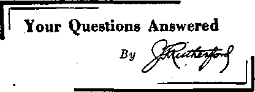

Shall we let this go on forever 2*

' /’T“$
..if A’
4
DEFENDER OF THE FAITH

1938
Consolation
Magazine
Tampering with the Ten Commandments 3
Mr. Felix Helps a Good Cause Along 5 George Puts It Up to Friend Hall
Catholic Action Adopts Foundling
Pope, Cardinal Paeelli and Felix
South America, Australia, Britain 12,13 Germany, Italy, Central Europe ■ 14-16 Your Questions Answered
By Trail and Stream and Garden Path
J—1 l.. I l .1— lu l » ■ .......—........
Published every other Wednesday by
THE GOLDEN AGE PUBLISHING COMPANY, INC. 117 Adams St., Brooklyn, N. T-, U. 3. A.
President Clayton J. Wood worth
Vice-President Nathan H. Knorr
Secretary and Treasurer Charles E. Wasner
Five Cents a Copy
11 a year in the United States |1.!S to Canada and all other countries
NOTICE TO SUBSCRIBERS
Remittances; For your own safety, remit by postal or express money order. When coin or currency Is lost in the ordinary mails, there Is no redress. Remittances ' from countries other than those named below may be made to the Brooklyn office, but only by international postal money order.
Receipt of a new or renewal subscription will be acknowledged only when requested. Notice of Expiration is sent with the journal one month before subscription expires. Please renew promptly to avoid loss of copies. Sand change of address direct to us rather than to the post office. Your re quest'should reach us at least two weeks before the date of Issue with which It Is to take effect. Send your old as well as the new address. Copies will not be forwarded by the post office to your new address unless extra postage la provided by you.
Published also In Bohemian, Danish, Dutch, Finnish, French, German, Greek, Japanese, Norwegian, Polish, Spanish, Swedish.
OFFICES FOR OTHER COUNTRIES
England 34 Craven Terrace, London, W. 2
Canada 40 Irwin Avenue, Toronto 6. Ontario Australia 7 Beresford Road, Strathfield, N.S.W. South Africa 623 Boston House, Cape Town
Entered as second-class matter at Brooklyn, N. T., under the Act of March 3, 1879.
♦ At Voltago, Italy, a group of girls said . they had been visited by the virgin Mary, and ' they had touched the rosary which she carried, but when they tried to cut off a corner of her sash Mary beat it. Usually a thing like this goes over big; and it did in Italy. Tens of thousands came to the city; but the bishop of Belluno thought it was a little bit too raw, and instructed the clergy to discourage the demonstration, which was done.
Blessed the “Hpiy Fire5*
♦ A picture in The People, London, shows Bishop Myers blessing the “Holy Fire” outside Westminister Cathedral recently. After a little practice a bishop gets so he can bless the holy ash can, make a straight shot with a soger at the holy waste basket, or decorate the holy cuspidor with a perfectly straight face, confident that the common people are so foolish they will swallow it all without turning a hair.
Maybe You Heard It Before
, ♦ Maybe you heard before about the Pullman car porter that was told by a certain man to be sure to put him off at a certain station, no matter what he said or did. Late the next morning he woke up to find his station fifty miles in the rear. He sought out the porter and bawled him out right. The porter took it resignedly but finally said, “Go on; it’s nothing to what the man said and did that I did put out. ’ *
Chicago A’etrs Makes It All Plain
♦ The Chicago News makes it all plain as to the difference between Socialists, Communists and Fascists, thus:
If you have six cows, the Socialists take three and leave you three; the Communists take all six; the Fascists leave you all six, and make you feed them, but they take the milk.
♦ In Auckland, New Zealand, a Mr. Brown was astonished to see in the morning paper an announcement of his death. Calling up his friend Smith to inquire if he had seen it, he was astounded when Smith cautiously replied, “Er—yes; where are you talking from?”
CONSOLATION
. “And in His name shall the nations hope.”—Matthew 12:21, A. R. V.
Volume XIX Brooklyn, N.V., Wednesday* February 9, 193B , Number
A HEADLINE in the New York World
Telegram reads:1 ‘ 10 Commandments Fit Today, Most Students Agree at N. Y. U.”
almighty God, and then juggle with another of the commandments, rearrange and subdivide it, so as to still make ten, it certainly
However, apparently the second commandment docs not fit, at least not as far as any evidence in the news item following this heading is concerned ; for the second commandment is omitted alto gether, while the tenth is divided into two parts. This is also done in the Roman Catholic Catechism, although the Roman CatholicBible (Douay Version) contains all of the ten. The comparison made herewith should give one an idea why the Roman Catholic Hierarchy does not want the Catholic population to read the Bible.
The second commandment is unquestionably a most important one, and why it should be omitted in a Catechism ostensibly setting forth the
THE
TRANSLATED FROM THE LATIN VULGATE DILIGENTLY COMPARED WITH THE HEBREW, GREEK. AND OTHER EDITIONS IN DIVERS LANGUAGES
THE OLD TESTAMENT
FIRST PUBLISHED BY THE ENGLISH COLLEGE AT DOL'AT, A.D. 1G09
AND
THE NEW TESTAMENT
FIRST PUBLISHED BT THE ENGLISH COLLEGE AT RHEIMS, A.D. 15S2
' TCBL1SI1EB WITH THE APPROBATION nt HIS EMINENCE JAMES CARDINAL GIBBONS ARCHBISHOP or BALTIMORE
JOHN MUBPHY COMPANY Publishers
BALTIMORE
.Printer* to tte Holy See .
MARYLAND
[Material on page 4 is from this source]
cannot be maintained with reason that such an organization does in truth and in fact represent Jehovah God. It very definitely misrepresents, opposes and disdains Him.
In deleting the second commandment from the law of God as given to Moses, the Hierarchy show they have a guilty conscience. They encourage the use of images and likenesses in the formal worship of Catholics. The excuse is made, of course, that they do not accord these images the same honor that is given to God, but merely show them a lesser degree of honor. Surely, say they, we should show respect to images and likenesses of angels, saints and the cross.
law of God is difficult to explain except Similarly, “respect” is demanded for the on the grounds that the Roman Catholic . flag, a formal obeisance or salute, such as hold-
Hierarchy does not represent Jehovah God, but His opponent, Satan the Devil. When an
ing hand or hat over the heart, or raising it in salute. Actually respect or marks of respect cannot bo received by images or symbols, as
organization will go so far as to omit, ignore . „ _ ,
and cover up one of the commandments of the they have no eyes to see nor ears to hear.
Gestures made before or toward them endow them with attributes they do not possess. Flagsaluting is but a milder form of image worship, if distinctions exist. Many who would not salute a cross, or show it “respect”, even under the mistaken idea that it is the symbol of Christ ’s death, ignorantly show reverence x for national emblems.
The honest Catholic population, and there are millions such, are urged to diligently compare the ten commandments given by Jehovah God to Moses, and recorded in Exodus, chapter 20, of the Bouay (Catholic) Bible, as given below, with the extract from the Catechism, opposite thereto, in the right-hand column. Notice that Jehovah God's second commandment, appearing in Exodus 20:is omitted altogether, and that this subterfuge is covered up by splitting the tenth commandment into two portions falsely labeled 9 and 10.
EXODUS '
CHAPTER 20.
The ten commandments. ,
COURSE OF RELIGIOUS INSTRUCTION Institute of the Bro Ibero of the Christian Schools
IN CONFORMITY WITH THE DECREES OF THE THIRD PLENARY COUNCIL OF BALTIMORE AND THE CODE OF 1918.
- LA SABLE BUREAU BROTHERS OF THE CHRISTIAN SCHOOLS 122 West 77TH Street New York Citi 1936
Nlhir Obstat:
BEMioius Lafort, S.T.L., Censor peputaltis.
August 3, 1911.
imprimatur:
E. F. PRENDERGAST, ArchiepMcopus Philadelphiensis. September 1, 1911.
WORKS TO PERFORM. 41
2. Which are the Commandments of God J
AND the Lord spoke all these words:
* (1) 2 1 am the Lord ihy God, who brought Ihee out of the land of Egypt, out of the house of bondage.
3 Thou Shalt not have strange gods before me.
(2) A Thou shalt not make to thyself a graven thing, nor the likeness of any thing that is in heaven above; or In the earth beneath, nor of those things that ate in the waters under the earth.
5 Thou shalt not adore them, nor serve them: I am the Lord thy God, mighty, jealous, visiting fife iniquity of the fathers upon the children, nnto the third and fourth generation of them that hate me :
o And shewing mercy unto thousands to them that love me, and keep my commandments.
(3) r Thou shalt not take the name of the Lord thy God in vnin : for the Lord will not hold him'guiltless that shall take the name of the Lord his God in vain.
(4) s Remember that thou keep holy the sabbath day.
o Six days shalt thou labour, and shalt do all thy works.
ioBut on the seventh day is the sabbath of the Lord thy God: thou shalt do no work on it, thou nor thy son, nor thy daughter, nor thy manservant, nor thy maidservant, nor thy beast, nor the stranger that is within thy gates. .
it For in sit days the Lord made heaven and earth, and the sen, and all things that are in them, and rested on. the seventh day: therefore the Lord blessed the seventh day, and sanctified it.
(5) is Honour thy father and thy mother, that thou mayest bo longllved upon the land which the Lord thy God Will give thee. ___________
(6) is Thou shalt not kill. •
(7) . is Thou shalt not commit adultery.
(8) is Thon shalt not steal.
(9)13 Thou shalt not bear false witness against thy neighbour. ___________
(ID) 17 Thon shalt not covet thy neighbour’s house: neither shalt thou desire his wife, nor bls servant, nor his hnndnmidl nor his ox, nor bia ass, nor any thing that 1b his. .
The Commandments of God are these ten:
1, I am the Lord thy God, who brought thee out of the land of Ksypt, out of the bouse of bondage. Thou shalt not have strange gods before Me.
See! In the Catechism, the second commandment is entirely omitted.
2. Thou shalt not take the name of the Lord thy God In vain. .
3< Remember that thou keep holy the Sabbath day.
4. Honor thy father and thy mother.
^5. Thon shalt not kill.
6. Thou shalt not commit adultery.
7, Thou shalt not steak
8. Thou shalt not bear false witness against thy neighbor, . :
9, Thou shalt not covet thy neighbor's wife, ’
IO. Thou shalt not covet thy neighbors goods.
See! The tenth cominandiMnt is split into halves.
CONSOLATION is doing a good work in exposing the wickedest group on earth, the Roman Catholic Hierarchy, and “Reverend Richard Felix, Pilot Grove, Mo., is helping the good cause along by printing and circulating a folder, a reproduction of which appears below. He was cramped for space and did not have room to reproduce the captions underneath the cartoons, and so these now follow his selections. Jehovah’s people will be much interested to "read again the story of Mr. Felix, which occupied the first six pages of The Golden Age No. 466, issue of July 28, 1937, and also to look up the issues from which the cartoons were selected, and to see again some of the good ones Felix missed.
Left to right, top row: (1) There lives an old woman who bos many and divursc children (Holy Mass, Purgatory, Trinity, Confession), who sho claims were fathered by God and whonj she asks the world
to accept as such without question or proof of their paternity. She keeps them hidden from the light of day because she knows that they arg so unreasonable and altogether hideous that no one ean behold them without a shudder. Justice and Truth demand, in the public interest, that she prove her claim to divine motherhood and produce her offspring. But she is full of terror and fears to show them, because she knows the world will recognize in them their father —Satan. (The Gulden Age No. 446, October 21, 1036, page 52) (2) Sister Jezebel says sho’s afraid he’ll prove a stubborn ccfnvert. (The Golden Age No. 457, March 24, 1937, page 393) (3) The Hierarchy’s Crusades—II. Capturing Jerusalem, they burned the Jews alive in their synagogue and slaughtered 70,000 women, children and babes. Dismembered bodies floated in rivers of blood, while the crusaders took ‘'time out” for devotions. 'Famine and pestilence shared honors with crime and depravity. At the capture of the town of Marra, the crusaders butchered the inhabitants and ate their flesh.’ . . . "And the Christians searched the carcasses of the murdered Turks for golden byzants and converted the gall which was found in their bodies into medicine.” (Mackintosh’s History of 'England, I, page 194) "To engage in the crusade and to perish in it, were almost synonymous. ” (Hallam, I, chapter 1) 300,000 crusaders perished at the hand of fellow “Christians” before they reached the Holy Land. “By the time of the third crusade the magic and wonder had gone out of these movements altogether, . . . Men went, but only kings and nobles straggled back.” So much crime and so much misery have seldom been accumulated in so short a space as the three years of the first crusade. Pope Innocent III “accuses the pilgrims of respecting in their lusts neither age nor sex, nor religious profession; and bitterly laments that the deeds of darkness, fornication, adultery and incest were perpetrated in open day by the Catholic camp”. (Gibbon, Chapter LX) (It is up to Mr. Felix to snow why, in view of the self-evident paternity of the crusades, he objects to the pretty picture ho has reproduced as the main feature, top center, of his selection. Who does he think bid father the crusades!) (Tha Golden Age No. 458, April 7, 1937, page 423) (4) Whose Vicar! (Tfe Golden Age No. 455, February 24, 1937, page 331) (5) Yesterday—-Whenever the pope quarreled with any one now, he called for a crusade, until the word ceased to mean, anything but an attempt to give a flavor to an unpleasant civil war. (H. G. Wells, Outline of History, page 645) Today—The German and Italian peoples have already been violated, and their voice silenced, their liberty, their self-respect, their very lives, crushed by the pope’s newest crusaders, the Fascists and Nasis. In Spain today these Fapa] madmen are outdoing in violence, violation, torture and ferocity the black deeds of the earlier Crusaders. (The Golden Age No. 457, March 24, 1937, page 398)
join the DEFENDERS OF THE FAITH
Shall we let this go on forever 2*
' /’T“$
..if A’
4
DEFENDER OF THE FAITH
7^. VI tJ (J L $ WAR is being wnged ngiuilat the Church. A challenge to rH. thinking Catholic* arc: the. slanderous □Hacks against the Faith by Rutherford and Ris Witnesses of Jehovah. RefnnCJeed hern from the pages of 'The Golden Age” are a few CAritlitLjrcs made by this group who have no Authority but thclp pwr. warped minds, no responsibility but (heir own per-vrrlrd impulses.
'The Lloldcn Age” which has recently .changed its name (o"Cfmsoliitiuj]" is Uublished twice a month in twelvf. different languages, claims a cirtulidimi of H.OOO.CKX). and is filled with insulting ciirtuons and wild charges against Hie Church. Bu.OOO field workers distribute this paper from dwr to door; they olsn disposed of 2 i.(DO,000 of RnllU'jfnrd's bi poled hooka and IkYiklrts Last year alone. Hexides this. Rutherford is on the sir [tsmiling and drfsmirig IIS over motv than onr hundred radio alalions Week a tier week, year in and y cur OU I.
bksll Cidhoiic-s re:jj»n mute forever th Ihc face of these oi:tragcaua charRes? Two hundred ddei fniiifd'tnen ar.ct women do not tluuk vn. 'Ilie past ye-ir they handed together to coon-cm cl I he evil jijfluctifif! of Hulhrefoid by means of the iwlto mid I he printed word. Ruch one pave what he or she could. Cori’i-ibut'oris ranged from one dollar lo five hirtidffid dollars, ihese same tucti and women mow extotul to you an iuvita’inn to join them.
Do you w.inL tn pass, on the heritage of Fni:h foyoCir c*Vn children? Do you want Io hrin the rdal bvltr of C«1 t»l i ci sen to your t-.onCu Ihulic frltnds in a -plain and popular way l)n you vi-itit to ace every charge bro Light against the Church answered? Then become
Left to right, middle row: (6) Holy water for Mamma and the babies. (The Golden Age No. 433, April 8, 1936, page 422) (7) Since the Roman Church was founded, 1500 years ago, and considered herself the repository of every privilege divine or otherwise, literally billions of honest but deluded persons have poured into her treasuries untold wealth in return for fraudulent merchandise. Masses, prayers for the dead, indulgences, miraculous tinware, and bones of- so-called “saints”, and other diabolical devices have enriched her beyond the wildest dreams of avarice. (The Golden Age No. 463, August 25, 1937, page 763) (8) Woeful tale of the fair (!) wanton, (The Golden Age No. 465, July 14, 1937, page 645) (In this instance Mr. Felix selected only the top one third of the cartoon. Had he published the remaining two thirds, showing the Hierarchy being soused with the waters of truth, and showing her ugly pimpled, speckled and spotted hide, it would have been a. little too much of a good thing for his purpose.) (9) (Continuation of No. 7) Yet, not satisfied with voluntary or coerced donations; this devilish organization introduced the Inquisition, the sole purpose of which was to enrich her coffers by confiscation of the wealth of the “heretic”-—branded wealthy. The fear of a fiery death caused many to contribute lavishly. This enrichment was at the expense of her own communicants, the poor and needy, the wealthy, the “highborn”, the murderer, the thief, and the degenerate. Notwithstanding such sources of revenue, die is a beggar and pleads poverty and a life of renunciation, adding yet more millions by collections for “charity”. (10) A clear case of infidelity. (The Golden Age No. 451, .December 30, 1936, page 195)
Left to right, the two cuts at the bottom: (11) (In an article on “Public Education—the Bulwark of Liberty”) C’m on, you brats; here's y’r dinner. (The Golden Age No. 450, December 16, 1936, page 167) (12) (In an article entitled" 'Communism* —the Devil’s Route to Fascism”) Just another bastard, just another doorstep job; in fact, just one more lie. (The Golden Age No. 465, July 14, 1937, page 643)
Mr. Felix animadverts to “this group who have no authority but their own warped minds”. Just whose warped minds are they to follow; his own? That is the Hierarchy’s whole idea. In the face of the petitions of some 7,500,000 people that the Hierarchy stand up to the microphone, like men, and present their side and allow Judge Rutherford to also present the Bible, the Holy Scriptures, the Truth, at the same time, he asks, “Shall we Catholics remain mute forever!” And the answer is that they shall. Hear the word of the Lord:
Why do we sit still? assemble yourselves, and let us enter into the defenced cities, and let us be silent there; for [Jehovah] our God hath put us to silence, and given ns water of gall to drink, because we have sinned against [Jehovah].—Jeremiah 8:14.
My bear Mr. Hall:
You sure must have read that book called Riches very hastily or else “you could not take it”, since you wrote the following at the time you returned it:
“All men tell lies, only the Bible tells the truth, so here is your book of lies: X prefer reading the Bible. 1 think it would be advisable for you also to read the Bible instead of reading such filthy lies as there is in this book. Do you know which was the first church to preach the gospel! When you look1 it up you will find it was the Roman Catholic Church, and it will be the last.” [Signed] ... “A devoted Catholic.”
It is natural for all men to tell lies: we are all imperfect; but I don’t see any excuse for any to be as big liars as the Catholic priests and nuns, and, in fact, anyone who is with them or around them. I know this to be a fact, because I was a Catholic myself for forty-five years, was raised up in it, served mass hundreds of times and took part in all the foolishness they go through with. I call it foolishness because it is all borrowed from paganism.
Now you say that you read the Bible; so, if you want a real ‘' hangover ’ ’ for tomorrow morning, just try to hook up the mass with the Bible. Did it ever occur to you that if the Catholic church really were the first church to preach the gospel, then Jesus Christ should have been a Catholic; but we find the Bible says He was a Jew. The Bible also gives the genealogy of Christ, which is found in the first chapter of Matthew. Every generation [in the lineage] of Christ is given there, and they were all Jews clear back to David. The Jews are farther away from being Catholic than any other denomination. They know it is idol worship. That is why the pope hates the Jews and is trying to run them out of Europe.
And, by the way, did you know that the word “Catholic” is not in the Bible? It is not even in the Catholic Bible, except in the footnotes, where some monk put it there. These might be good questions to ask your priest.
Think it over, fellow, rub the mist from your eyes, and look around. You are some better off than some of the Catholics, anyway. I say this because you read the Bible, so you said. I have an aunt here who calls herself a “devoted Catholic” and yet she told me that if I were to bring any Bible, even a Catholic Bible, into her house she would figure I was bringing the Devil in. If you get mad about this it only proves that you can’t take it. I mean the truth. If you don’t write me I will figure you got mad.
Since I have been out of that church (so-called “church”) many people have asked me why Catholics get mad when you talk about religion, The only answer I can give is, Because they are kept in the dark about the Bible and when they can’t find an answer they get mad. Not more than two percent of the CatH-olics around here have Bibles. Here are a few scriptures [from the Douay] to ask your priest about:
Matthew 23:9: “ Call none your father upon earth,” etc. In the Catholic teaching it says the soul is immortal and cannot die. Now Ezekiel 18:4,20 says, “The soul that sinneth, the same shall die.” I suppose you rattle the rosary off by the hour; but in Matthew 6:7 it says, when you are praying, not to speak much, as the heathens; for they think that for their much speaking they may be heard. In John 5:39 it says, ‘Search the Scriptures; for you think in them you have life everlasting; and the same are they that testify of me.’ How many Catholics do this, when most of them haven’t-a Bible? In the 8th chapter of John, 31st verse, “Jesus said to those Jews who believed Him, If you continue in my word, you shall be my disciples indeed.” Notice it says “Jews”, and not “Catholics”. His disciples were Jews. The Roman Catholic church teaches that the church is God’s house and He is always in it. Now the Bible says, in Acts 7:48, ‘Yet the Most High dwelleth not in houses [some Bibles say “temples”] made with hands.’ Look it up; don’t be blind. Also read Acts 17:24; it speaks of temples here and that He does not dwell in them. Read what it says in Acts 20:20, how Paul taught publicly from house to house. If you have the Truth, why don’t you do this ? It is your duty, if you claim to be a footstep follower of Christ, The Bible says, in Romans 5; 12, all men have sinned. Yet I have a brother-in-law who is a “devoted Catholic” and he says a priest can’t sin. Do you believe this? If you do, you are believing a lie, In the 2d chapter, 15th verse, of Paul’s letter to the Galatians, Paul says,- “We, by nature, are Jews, and not of the Gentiles, sinners.” Now he did not say “Catholics”. This shows Paul was a Jew, and not a Catholic.
This is a good one for you to take notice of: It says, in Hebrews 10:11, that the priests daily offer sacrifices that can never take away sins. And my grandfather willed the priest $150 or $200 to pray him out of “purgatory”; and you can’t find the word “purgatory” in the Bible. This is a man-made racket, and millions have fallen for it, and you are one of them. The Roman Catholic church teaches her people to have respect for the pope and the priests, but the Bible tells us if we have respect as to persons we commit sin. This is found in James, chapter 2, verse 9. Look it up.
Your church is full of statues of Christ and the apostles and the saints. This is clearly for-bidden in Exodus, 20th chapter, 4th verse. In this verse it plainly states not to make any likeness of anything that is in heaven above or in the earth beneath, nor of those things that are in the waters under the earth.
Now, then, just who are the liars? What is “truth”? The answer is, The opposite of a lie. What is a lie ? The opposite of truth. It’s got to be the one or the other.
Exodus 20:4 says not to make any image or likeness of anything that is in heaven or anywhere else; and you know that your church is full of these things. Now turn to the book of Wisdom in your Catholic Bible and read the 14th chapter, 8th verse, which says: “But the idol that is made by hands, is cursed, as well it,«as he that made it: he because he made it; and it because being frail it is called-a god.”
I am yours very sincerely,
George Stewart.
COMMUNISTS are usually athfeists. Atheists are opponents of religion, especially of the “holy Ro man’* variety. Atheists deny the existence of Almighty God. When an atheist-propagandist joins hands and consorts with, and renders aid, comfort and assistance to the “holy” church in its war against humble servants of Almighty God and His Christ, that, dear fellow thinkers, is something. Listen, therefore, to the tale of Charles P. Windle, sometimes called C. Pliny Windle.
In Chicago, in a dingy little office cluttered with magazines, newspapers and pamphlets, Pliny Windle has embarked on his new campaign in defense of religious freedom of that much abused (tears), long-suffering (more tears), persecuted and maligned (“whales” of anguish here), satan ie, demoniacal, diabolical and execrable aggregation of parasitic, religious racketeers called the Roman Catholic Hierarchy.
For many years the Windle family were exponents of atheism and opponents of religion, but that form of propaganda seems to have petered out. Something was needed in its place, and as C. Pliny looked over the field the Catholic racket looked like a good source of income. Those priests know how to collect the shekels from the flock. Why couldn’t he share in the fruits thereof?
So he takes his pen in hand and brings to birth a conglomeration of words entitled “The Rutherford Racket”, making it a part of a series called “Truth and Light”. Its announced purpose is to .combat Communism and religious prejudice against the Catholic church. He claims that as a non-Catholic he can render efficient aid to the abused old , snake-in-the-grass, and, of course, at a profit.
A sample of the “truth and light” in his brochure is shown in this paragraph from page five:
“He [Judge Rutherford] mixes unwarranted assumptions, brazen falsehoods, agonizing prophecies, misapplied biblical quotations and weird intellectual interpretations of the Scriptures into an intellectual dish that must give many a Witness of Jehovah a bellyache in the place where his brains ought to be.”
It’s not a difficult task to rattle off a bunch of adjectives and nouns from a typewriter and call it “truth and light”. It goes over well with the beskirted gentry who have been dodging a debate with Judge Rutherford these many years; but to be an article of worth along the lines of truth and light some proof ought to be produced. Some of the alleged “unwarranted assumptions” Pliny mentions should be shown. The “agonizing prophecies, misapplied biblical quotations” and “brazen falsehoods”, if such there be, should be brought into the cold light of day for all to read. Windle knows that he cannot do that, and neither can his priestly nurses. If it produces some of the greatly desired long green, why should he worry about the truthfulness of the allegations?
The Hierarchy’s “inspected and passed” Irish World and American Industrial Liberator (New York City) in its issue of December 11, 1937, sniveled and sobbed almost a column of favorable quotation from and comment on Windle and his effusions about Jehovah ’s witnesses, and especially Judge Rutherford, under a bold headline, three columns wide: “Non-Catholic Lecturer Raps the Ill-Informed Who Speak Blind Prejudices.” The editorial motto of this step-papa to atheism is a “holy” utterance of the Hierarchy’s Archbishop MacHale, nobly printed in each issue: “ If you wish to have an honest press, you ought honestly to support it.” It’s lovely to have such lofty and sublime aspirations about an honest press, but just how closely the Irish World adheres to the exalted sentiments of its patron archbishop can be judged from its whole-hearted approval of a Godless writer’s profane disseminations.
An ambassador to convey this precious “truth and light” (not forgetting to collect the circulating medium therefor) to the waiting dupes was needed. Thereupon one Leo Connelly, alias R. J. Keyes, alias Tom Bosey, alias----Fitzpatrick (he didn’t have time to
think of a first name), noamed through Ohio soliciting orders. Windle wrote to him that he was doing fine, and discussed the delicate financial situation, suggesting that perhaps the “Most Reverend Bishop” at Cleveland might help at that critical point with a loan of a substantial order for a supply of lumps of lies, alias “truth and light”.
Said Pliny: “ It would be the greatest thing he [the bishop] could do to help build a mighty bulwark against atheistic communism, Rutherford’s religious prejudice, and enemy forces which aim at the destruction of religions, morality and inalienable rights.”
And if it doesn ’t take too many of his shekels, the “most reverend bishop” may take a flyer at it.
Bishop Sheil, alias the Most Reverend Bernard J. Sheil, D.D., vicar general of the archdiocese of Chicago, is also supposed to come across for Pliny’s project with something more substantial than a sacerdotal, blessing.
Connelly, alias Keyes, alias Bosey, alias Fitzpatrick, also did a little gum-shoe work for the “cause”. He called on some of the companies of Jehovah’s witnesses, talked with them, procured liberal quantities of books and booklets, and evidently tried hard to find some “communists” and “communist propaganda” to prove the need for building up that desired bulwark. He told some wonderful fiction of his great and burning love for truth, and of injuries inflicted on him by papists. He didn’t deceive Jehovah’s witnesses, who told him to go on his way and cease pretending to be what he is not.
The Catholic.Hierarchy, with all its wealth and its oodles and oodles of “holy” societies and orders, dare not condescend to direct a priest, pontiff, pontifex primate, bishop, prelate, rector, abbot, vicar, apostolic reader, nuncio, apostolic delegate, buck ntu^, sissy FEBRUARY 9, 1938 ' saint, or even a cardinal, to meet Judge Rutherford in public to discuss the fundamental issues involving the eternal destiny of fair-minded and evil-minded people. The “glorious” Hierarchy dare not make even a pretense of answering the challenge 'presented in his writings. It can and does try to escape the judgment of clearly stated, God-given truths by shouting “calumnies”, “libels,” “slanders,” “lampoons.” And even in such shouting it appears to be losing its power and might. Its falsehoods, perversions, dissimulations and fabrications do not Stem the mounting flood of TRUTH, So with that supreme inconsistency which has marked its actions from ancient days, the Hierarchy now publicly adopts and cuddles to its ugly bosom an unbelieving heretic to carry forward its dirty work.
.Consolation wonders who will find himself stung first. Will C. Pliny suddenly discover that his loquacious efforts are not bringing in the gingerbread, angel-food cake, lady-fingers, macaroons (or what have you) ? Or will the “always right” and most reverend bishops find that they are dishing out the horseshoe nails for the essence of nothingness?
“Catholic Truth”—Pittsburgh Style ♦ “Reverend Father” James R. Cox, Pittsburgh, Pa., offered $25,000 in prizes; chances $1 each. The chance-takers were each to get a medal called the “St. Christopher Miraculous Rose Medal”, concerning which “Reverend” Cox says with more or less truthfulness:
The meaning of this beautiful medal, offered by the Reverend Father Janies R, Cox, possesses so great an intrinsic value that it is impossible to estimate it in dollars and cents . . . Never before was such a beautiful medal offered at such a price and your suggestions may make you independently rich.
Probably you may think that you know all about this St. Christopher bird; but listen to this by the “Reverend Father” Cox:
The martyr Christopher, whose name signifies Christ-bearer, was one of the fourteen Holy Helpers. Earlier in life as a pagan of huge stature, he had served first the greatest of earthly kings, and then the Devil. Later, while he was a ferryman for poor travelers, he one day was carrying a child across the stream, when despite his giant strength the weight of the child bore him down. Thereupon the child was revealed to him as Christ, the King of heaven and earth,
THE same bloodthirsty old Devil that was after the Albigenses in the south of France in the twelfth century is after them still. The Albigenses held unwaveringly to the belief that the Roman Catholic church, as governed by the pontiffs of Rome, was corrupt. Their lands were forfeited and all the inhabitants of Beziers, Catholics as ■well as others, were put to the sword, 40,000 being killed indiscriminately. Evervinus, a Roman Catholic, addressing “Saint" Bernard, another Roman Catholic, is reported as saying:
Tell me, holy father, how is this? They entered to the stake and bore the torment of the fire, not only with patience, hut with joy and gladness. I wish your explanation, how these members of the Devil could persist in their heresy with a courage and constancy scarcely to be found in the most religious faith of the Christ.
Seven hundred and twenty years have passed, and as proof that the Devil who hounded the Albigenses to death in the Dark Aggs is the same old Devil, and will be until God Almighty chokes off his wind, here is an extract from an encyclical put forth at'Vatican City, September 29, 1937, which makes the blood run cold, in its appeal to all that is worst in fallen man:
As the terrible sect of the Albigensians was overcome by the invocation of Mary, so, we hope, shall they be overcome who, as Communists of today, remind us of them by their craftiness and violence.
It should be added that anybody that disagrees with the bloodthirsty son of the Devil at the Vatican is a “Communist”.
But, considering that the Albigenses denied the doctrine of transubstantiation, trinity, purgatory, infant baptism, and rejected all papal claims to infallibility and vicegerency; and considering that they tried to live according to the Bible, and not according to the traditions of men; and further, that Pope Innocent III preached, a crusade against them (about 1165 to 1179) and that they were faithful unto death, whom would you say Pius XI was especially referring to when he called modern Albigenses “communists”?
Draper says: “She [the Roman church] did not crush it [the Albigensian ‘heresy’]; that would have been too indulgent; she absolutely annihilated it. Awake to what must necessarily ensue from the • imperceptible spread of such opinions, she remorselessly consumed its birthplace with fire and sword; and, fearful that some fugitive might escape her vigilant eye, or that ‘heresy’ might go wherever a bale of goods might be conveyed, she organized the Inquisition, with its troops of familiars and spies. Six hundred years have elapsed since those events, and the south of France has never recovered from the blow.” —Int. Dev. Ev., ii, 147.
THE old gent that backed Hitler in his destruction of the German Republic, and Backed Mussolini in his rape of Ethiopia, and backs Hitler, Mussolini and Franco in the attempted destruction of the Spanish Republic, is in agreement with “Father” Felix, of Missouri, in the conspiracy against Judge Rutherford.
The Catholic Register of January 13, 1938, conveys “assurance of Pope Pius Xi’s prayerful interest” in the devilish work of “Reverend Father” Richard Felix, treated atlength in The Golden Age No. 466, July 28, 1937. If you did not see the pretty pictures in that issue, you missed something.
From his own writings, which he admits are purely fictional, Mr. Felix appears to crave the arrest and imprisonment of Judge Rutherford more than any other one thing. That is the only point he makes that could have called forth the approbation of either the pope or Cardinal Pacelli. What is wrong with these gentlemen that they do not dare debate their doctrines with Judge Rutherford, but that they do dare to conspire to violate the Penal Code by advocating imprisonment of an innocent man?
Jehovah’s witnesses are laughing loud and long at Felix’s claim that he and his friends have already circulated 150,000 pieces of literature making personal attacks on the ablest Bible expositor of our day. One thing is sure, and that is, that, whatever may come, Jehovah’s witnesses never stir up mobs, at any time, anywhere.
"Fascism Declared Already Here”
♦ Tufts College, Universalist denomination, a private school, near Boston, had as one of its teachers Prof. Alfred C. Lane, 72 years of age, accounted one of the best geologists in the world. Massachusetts is in the grip of Curley, otherwise Catholic Action, otherwise Fascism. When Catholic Action demanded of Prof. Lane that he take the oath of allegiance he prefaced his oath with the following statement: “At the request of the trustees of Tufts college and protesting that my status as a teacher does not and will not make of me a public official^ and construing the oath as provided in section 2A of chapter 370 of the acts of 1935 that it does not abridge the admirable provisions of th^e constitution of Massachusetts protecting liberty of religion, of thought and of speech, ” I do solemnly, etc. And what did the tool of the Jesuits, Mr. Reardon, Roman Catholic commissioner of education, do when the amended oath came into his possession! Don’t be silly! Why ask foolish questions! Mr. Lane lost his job, of course. The Des Moines Regis ter publishes the facts in three columns (from The Christian Century) under the caption “Fascism Declared Already Here”. Although the article does not mention the "Roman Hierarchy, it does say: “The purpose of the loyalty oaths that these pseudo-patriots are pushing is not to promote loyalty to the nation, the interests of its people and the imperishable principles of free government embodied in our fundamental instruments; it is the regimentation of American minds into conformity with their own patterns of political thought by police control under their own direction. And that is Fascism.”
♦ In 1520 the Five Nations of New York formed the powerful Iroquois alliance. The preamble to the treaty began with these words: “We, the people of the Mohawks, Senecas, Onondagas, Oneida and Cayuga, to form a union to establish peace, equity and order, ...” The preamble to the Constitution of the United States began with the words: “We, the people of the United States, in order to form a more perfect union, establish justice, insure domestic tranquillity,...”
♦ The organizing genius of the Townsend Plan paid himself a salary of over a thousand dollars a month, and almost a thousand dollars a month more for the cost of his apartment, his living and other incidental expenses. Additionally, Robert E. Clements, the aforesaid genius, also accepted for himself one-half the profits of the weekly magazine published for and supported by the old people who put a million dollars eash into the plan in hopes of getting something out of it. When the trail got hot, Mr. Clements resigned.
Blessing the “Prince of This World”
♦ That was a savage paragraph by “Aiteh-elde” in the Baltimore Sun when he said of this “civilization”:
God has been left out of the picture—until time for a political convention, and then we call in some ' dominie to ask God’s blessing upon the convention; which is an insult to God, for it simply means asking God to bless the reign in the earth of the “prince of this world”.
American League for Religious Liberty
♦ The American League for Religious Liberty, Inc., has been formed of Catholics, Protestants and Jews to fight for religious liberty of Catholics in Mexico and Jews in Germany. How about doing a little fighting for religious liberty in the United States, where Jehovah’s witnesses have been subjected to all manner of injustices in seventeen States within the past nine months!
Lost—59,000,000 Man-Years of Work
♦ Figuring on what could have been done with the 59,000,000 man-years of work lost during 1930-1935 the American . Federation of Labor Survey declares every family could have had $4,400 more to live on if the men had been at work. What could have been done with this vast sum under proper management is almost unthinkable.
♦ Said Thomas Paine: “If a government requires the support of oaths, it is a sign that it is not worth supporting and ought not to be supported. Makep government what it ought to be, and it will support itself.”
♦ This place has more flies, more fleas, more mosquitoes, more roosters running around in black nightgowns, more aluminum cooking utensils and more vaccination than you ever saw in all your life; but there are also some honest hearts that rejoice to receive the Kingdom message, so we are glad to be here.
Policemen are plentiful, but seem to be of a different type from most of those we read about in Consolation. When we put on sound programs, they help us find suitable parking places and, if there is a crowd around the ear (there usually is) they direct the traffic. One afternoon as we drew up to the curb at a park to give a program, the traffic cop stepped up to the ear:and said: “If your transcription machine isn’t level, run the car up on the curb.”—N. A. Yuille.
♦ Social insurance has been decreed in Peru. It covers the wide fields of illness, maternity, old age, inability to work, and death. It is obligatory for members of both sexes whose earnings do not exceed $750 annually. Subsidies begin three days after a person becomes ill. Breakfasts are provided for needy children attending school. The law is one of the most advanced pieces of social insurance legislation ever attempted.
♦ In Santiago, Chile, thirty Nazis were arrested, wearing Nazi uniforms, underneath their own habiliments. The leading Nazi in Argentina was killed at his own door, some say by fellow Nazis who were dissatisfied with the way he was spending the party’s funds. It is estimated that there are 100,000 Nazis in Argentina and that there are organizations of them in Brazil, Chile and Ecuador.
Vast Coal Deposits in Antarctic
♦ The vast coal deposits in the Antarctic, coal enough, as Rear Admiral Byrd said, “to supply the world,” are proof that the Bible story of the Flood, as recorded in the Scriptures, is a narrative of exact facts. The ice that is now in Antarctica is largely composed of the waters which fell from the great tanopy still enveloping the earth while the ark was building.
12
Naked, Starving Men on Galapagos
♦ Letters smuggled from Ecuador’s prison camp on the Galapagos islands show that the prisoners confined there are provided with neither food nor clothing and are deprived of the most elementary necessities of life. When they are dumped on the islands they are told to contrive to live the best way they ean, as no provision whatever is made for their sustenance.
All Visitors to Ecuador Must Bring $100
♦ Ecuador is determined to get something out of its visitors. Each person coming must deposit $100. This is returned after a thirty^ day stay in the country. By that time the visitor will almost certainly have expended $100 in sight-seeing; so, if you wish to see Ecuador it is either $100 eash or else the movies or travelogues.
How the Jivaros Shrink Human Heads
♦ The Jivaro head-hunters of Peru shrink human heads by picking out through the neck every piece of the skull without damaging the facial features. Then with heated sand and hot pebbles the skin and tissues are gradually shrunk until the head attains to the size of an orange.
Bars Priests and Women from Polls
♦ The president of Ecuador issued a decree barring fromf the polls all manner of persons wearing skirts; also Communists. The voters are limited to men who can read and write; priests, preachers, Communists and women are excluded from the polls.
Serum Peddlers Busy in Argentina
♦ Serum peddlers have been busy in Argentina and have something to show for their efforts. The entire population will be vaccinated. '
♦ In Consolation No. 47^ mention was made of the fact that W. Creswell O’Reilly is Australia’s film censor. Consolation readers were invited to “Guess his ‘church’ ”, Wrong for once! He’s a Methodist.
CONSOL. ATI ON
♦ Benjamin Darnley started to school in May, 1937, at five years of age. The only school in the district is a Church of England school; and this worried Bennie. He said: "Why must I go to a Church of England school?” His mother explained that as there was no other school she could not help it, but that she would speak to the master and ask him to excuse Bennie from any religious teaching.
On the first morning the whole school assembled in the hall for a hymn and .prayer. When the master sat down at the piano Bennie thought he was to take part in a religious ceremony, and called out, "Oh, please, Mr. Rudge, I can’t stay here, I can’t stay here!” The master replied, "Why not, Bennie? What is the matter?” Bennie said, "Please, m'y mother and my father do not want me to learn any Church of England teachings. I ’in one of Jehovah’s witnesses’ little children.”
The master kindly sent him into another room, saying how much he admired the little ehap for speaking up like that, and that he would see that Bennie did not learn any Church of England doctrines.
That evening Bennie told his mother, "I did not hear you speak to Mr. Rudge about it; so I thought I had better say something.” Next morning a neighbor called out to Bennie’s mother; "So Bennie started school yesterday. We have all heard how he has been letting his little light shine. ”—L. M. Allcorn, England.
Jesuit Priest Favors Press Censorship
♦ "Reverend Father” F. Woodlock, Jesuit priest, Farm street church, London, expressed himself as so fearful that Hitler or Mussolini might be offended at some cartoon or biting criticism in some English paper that he proposed a censorship so that these two mountebanks will have no excuse for starting another world war. Manifestly his real sympathy is with them.
♦ Britain’s fastest train, and the fastest time of any train anywhere, made a record of 113 miles an hour running from Newcastle-on-Tyne to London on the London and NorthEastern Railway.
FEBRUARY 9,1938
♦ L. MacNeill Weit, British M.P., describing the British king’s duties, says:
The point to be remembered with regard to the king is that he has no executive functions whatever in a constitutional democracy. He reigns, but does not rule. Every letter he writes, every speech he makes, is put into his hands by others. His duties are purely spectacular. He is called upon to do nothing as king that involves the use of his judgment or even his intelligence. All that is left is ceremonial and pageantry. As the king has little or no executive functions to perform, something must be substituted. Hence the adoration, the deification of the monarch. If you want to see how wonderful and adorable the monarch is, read the Tory press. There you will see that £410,000 a year is cheap when you consider that it is one of the ways in which the indispensable aloofness,is obtained.
♦ A writer in the Scottish Morning Post wrote that he went to church and when the pastor started to drone monotonously he fell asleep. He continued:
On the way home I encountered a van with a loud-speaker on the roof. Inside the van was a gentleman operating a gramophone, and from the speaker came the pleasant, friendly voice of a famous American preacher. I stopped, and for some time found myself listening intently to an address on a religion I am not particularly interested in. It struck me then that if our ministers would preach to us in this fresh, friendly manner, they would have no cause to lament about the sparseness of their congregations.
The Largest Single Business in the World ♦ The largest single business in the world was started in Rochdale, England, by 28 weavers who put in £i each for starting a cooperative store. To themselves, all goods were sold by themselves at the same prices as charged by other stores. At the end of the year the profits were divided according to patronage. Anyone might invest £1 for one share, or buy as many shares as he desired, but could have only one vote. In the United States last year the eo-operative enterprises in America did a combined business of $500,000,000 and distributed several million dollars in dividends among the members, patrons and owners. So states The American Guardian.
Deutschland-Berichte ,
♦ From the Deutschland-Berichte, of the Social Democratic Party of Germany are drawn the following impartial reports:
It is not the masses that encourage action against the Jews. It is a small minority; but this minority holds sway: it has all the power in its hands, and with its terrorism stifles every, voice that would protest. . . . The resuit of the anti-Semitic movement up to the end of 1936—expressed in figures—is a decline of the Jewish population of Germany from 517,000 to 390,000. Approximately 110,000 Jews have emigrated, and' the balance of the decline is caused by an excess of deaths over births. On the other hand the Reich can boast of 153,000,000 marks in revenue from the so-called “Flight tax” which accrues almost exclusively from Jew's. ... Of the economic injury inflicted upon the Jews, these 153,000,000 [marks], how'ever, form but a small fraction. Big Jewish concerns are continually passing, under compulsion, out of Jewish into Aryan hands. . . . The Jews are becoming impoverished. Large numbers of them need social assistance if they are not to be driven to suicide.
What are the authorities doing? They have laid it down that philanthropic gifts for Jews are not exempt from taxation. Old men and old women, the inmates of the almshouses of the B’nai B’rith Lodge were literally turned out of doors. . . . After long absence a man, anxiously expected, returns from a concentration camp to the arms of the woman with whom he had lived for seven years. He is an Aryan, however, and she a Jewess. They seize him again and condemn him for another two years in prison. . . .
Now comes the supreme head of the four-million city, the lord mayor and city president, Herr Lippert, who says: “In 1935 we placed a notice board at Wannsee with the ' inscription ‘Jews^not admitted!’ At the request of the foreign Office we had to take it down, as preparations were then in progress for the Olympic Games. On that I made the superintendent of the baths acquainted with a skillfully formulated measure of self-help. Thebe is no need to regulate everything officially, but one must remember that, thank God, there are SA and SS men. That proved a success in the open-air bath, . . . The matter was managed without making a terrible rumpus on the spot and causing a big crowd to gather. The swimming master was called in to assist. He has called upon any Jew in question to leave the bath at once. Whenever it was necessary the stalwart SA men have waited a little in the forest outside the baths till the man came out, and they have just shown him what was necessary.”
In Germany they will not forego the pleasure of maltreating the Jews, but they will also not forego making use of them when they can. Jewish technicians, for example, are kept back from leaving the country, since they are indispensable in the war industry. Above all, however, it is Jewish doctors that, despite all chicanery to which they are subjected, Germany will not allow to emigrate. When war comes the army will need doctors, and then the Jewish doctors will be indispensable!
From every quarter of the Reich reports come in of restriction of output and of short time being worked in consequence of shortage of raw materials. In Saxony there are weaving mills that work only one day in the week. To save on real coffee, malt coffee is made, but some day the malt coffee factories will have to close down because they can no longer obtain the necessary barley.
The trades unions have ceased to exist. Every attempt to continue their work is punished with penal servitude. There are no longer employers and employees to negotiate together as parties with equal rights, but only a Works Community, the leader of which is the undertaker, whereas the workmen, as his “following”, are under obligation of fidelity to him. There are, in consequence, no Works Councils, but only so-called “Trust Councils’ which bear this appellation because they do not enjoy the confidence of the workmen and have been forced upon them. But these “trust councilors” may not discuss matters amongst themselves, but only in the presence of the undertaker. Freedom has been abolished, and the workman is bound to the con* cem. ... If the workman, in the face of rising costs of living, coupled with sinking nominal wages, wants to maintain himself and his family, then he must work overtime. . . . With the present regulation of the market a dismissed workman ... is as good as a pariah.
♦ During the merry month of August, a certain submarine, or submarines, appeared and disappeared, fifteen miles north of the island of Lemnos, which is about two hundred miles north of the Greek islands of the Dodecanese ' that are occupied now by Italy, and where this imperialistic nation has built a strong naval base, sheltering all kinds of keels of death and destruction.
This “mystery” boat or boats attacked some vessels carrying cargoes of wheat to the starving people of Spain, whom Italy decided to exterminate in her true “Christian” spirit. They were torpedoed in the name of Christ and Civilisation. Food needed so badly by the Spanish children and women was sent to the bottom, and men forming the crew were dispatched forcibly to tell St. Peter the progress of our age.—The Dodecanesian.
Mussolini and Hitler Hang Together
♦ Mussolini and Hitler hang together—and should! The agreement between Germany and Austria makes the accord between the two dictators practical. Austria was whittled down by the World War so that for a distance of more than a hundred miles it is no more than a mere sliver. At the Brenner Pass Italy is only forty miles from Germany. Barracks convenient to the pass are being rebuilt and 5,000 civilians were at work, at last reports, making military roads on the Italian side of the pass, so that when the time comes to exchange troops there will be no difficulties in the way. Heavy artillery emplacements, bomb-proof shelters, munition dumps and airdromes have also been built, indicating that Italy is anticipating trouble and preparing for it.
Italian Munitions Used Against Italians ♦ In the war in Spain a group of antiFascist Italians, called the Garibaldi Battalion, are battling their own countrymen, enlisted to aid the cause of Franco and the pope. Loud-speakers, explaining the issues of the war to Mussolini’s army, led to many desertions from the Fascist side. Major Umberto Galleani, in charge of the Garibaldi Battalion, explains that at the time he left Spain to lecture in the United States his troops were supplied with munitions made in Italy.
Will Seek to Fascistize the Whole World ♦ Mussolini, so it is claimed, will seek to Fascistize the whole world. There are 6,500,000 Italians in foreign lands, and he will expend 60,000,000 lire trying to convert them to the form of government he now represents. Papers will be started, edited in Rome, in every large colony in America and elsewhere. Mussolini will try to do in other lands what he will not at all permit in his own land. In other words, he will use freedom of the press as a weapon to entirely suppress freedom of the press.
Murdering All Right; Swearing Wrong ♦ It is all right for Italian troops to murder peaceful and innocent Ethiopians and Spaniards, for that has the pope’s “blessing”; but it is all wrong for them to cuss such an arrangement, or the ones at the head of it, and so the Italian under-secretary of war, General Pariani, has issued orders that hereafter any Italian that gets his Sunday-sehool language upside down must be locked up till he repents.
♦ The curia at Vatican City are always in hot water with Pope Pius XI because he says too many things first and thinks afterwards. Just now they and he are wondering what was in the back of Mussolini’s head when he said;
Capitalism, parliamentarian ism, democracy, socialism, communism and certain vacillating Catholicism with which sooner or later we shall deal in our style, are against us.
♦ On the thirteenth anniversary of Matteotti’s murder, the two greatest living Italian liberals, Carlo Rosselli and Nello Rosselli, living in Paris, were stabbed to death because they were opposed to the Hierarchy’s plans for world-wide Fascism (Catholic Action).
♦ Newspapers in Italy are limited to six pages, to save cellulose. Advertising rates in Mussolini’s own paper Popolo d’Italia are $14.20 for a one-inch single-column marriage announcement, and a six-inch two-eolumn advertisement costs the advertiser $240.
♦ Maria Sznablowna, Gdynia, Poland, is an unfortunate woman. Passing an old church and cemetery in Oksywia, Poland, she suddenly exclaimed , to the friends with her, "Here I was buried.” She then swooned, later stating that she remembered perfectly the events of 300 years ago: that she was then the wife of a fisherman by the name of Go-losz; that he was killed in the Swedish-Polish war of 1648-1668; that she went fishing with her two children and was drowned and later buried in the cemetery in question. Examination proved the correctness of her information about the-Swedish-Polish war, and the deaths of Golosz and his wife. She was wholly in error, however, in supposing that she was present at the time any of these things occurred. The poor woman has been imposed .upon by demons who filled her mind with the stories she reproduced, as easily as one may put a record in a phonograph.
♦ In the anti-Jewish riots at Brest-Litovsk, Poland, the police co-operated with the rioters so well that mobs smashed 1,200 Jewish stores and homes, inflicting damages of $500,000. The Jews offered no resistance, but eleven days later, by way of protest, closed all Jewish stores in Poland for two hours, mutely standing in front of - their properties while doing so. It is calculated that 3,000,000 Jews participated in the protest.
♦ The Nazis, having gained control of the free city of Danzig, have ruled that all teachers and pupils must hereafter use the Nazi form of greeting. In the very nature of things this ruling is bound to bring suffering to some of Jehovah’s people, of whom there are many in the Free City.
Reminiscent of the “Dark Ages”
♦ Reminiscent of the "Dark Ages” (which are still dark, however), an escaped prisoner of Germany showed in Czechoslovakia where pieces had been cut out of his feet and salt and pepper had been rubbed into the wounds. Another, escaped at the same time (one of four), had the Swastika branded on his skull.
16
♦ There are several million Germans in Czechoslovakia whom Hitler would like to get; under his thumb. To that end thousands of the children of these German citizens were invited to spend their vacations in the Reich. Czechoslovakia politely declined the offer, making the excuse that Germany is short of food and the little folks might not receive sufficiently wholesome nutrition. And was Der Fuehrer mad?
A Ten-Year-Old Soldier ♦ The village of Eipel, Czechoslovakia, in 1937, advertised for a policeman, who must -have served in the World War and must be less than 30 years of age. They got their man; for one youth of the community had been taken to the Russian front in 1917 when he was 10 years old. The probability is that the advertisement was so framed that he alone could obtain the desired position.
♦ It is the settled opinion of scholars that if Peter ever visited Rome at all it was in the last year of his life; hence there is considerable doubt if the "tomb of St, Peter” is his tomb. Nevertheless, the pope, in August, 1938, will light a torch at the tomb alleged to be Peter’s, and messengers will carry it to the Eucharistic show. at Budapest, lighting torches all over Hungary on the way,
♦ When, in Yugoslavia, lists of Jhe politicians who had voted for the Roman Catholic concordat were read out for excommunication in the Orthodox churches, it must have been funny to hear the people chant, after each name, "May he be damned.” And not such a bad idea at that; it might go well in the U.S.A.
♦ In Yugoslavia ^re 4,000 persons 100 years of age; 62 of these are 120 years or over. They ascribe their age to the fact that they drink nothing but sour milk. Most of them, also, are fond of green paprika, onions, garlic and tomatoes. But sour milk (yoghurt) is the ■ drink of them all.'
. CONSOLATION
QUESTION: "What trends in America show that Fascism is a real and present danger ?
Answer: Fascism is a real menace to American traditional liberty. Fascism and Nazism are one and the same thing operating under different names. They are the offspring of the Roman Catholic Hierarchy and are therefore both religious, and back of them is Satan the Devil. For many centuries the Roman Catholic Hierarchy has been moving to gain control of the entire world. At the time of the formationof the League of Nations, the Vatican attempted to get a seat in that conference. Not succeeding in that, when the League of Nations was born, the Roman Catholic Hierarchy rides on top of the whole thing. Communism was a supposed threatened danger in Italy. Mussolini led the Fascist crowd and soon openly identified Fascism and the Roman Catholic Hierarchy by making an alliance with the Vatican. The policy of the Roman Catholic Hierarchy is to practice fraud upon the people by raising up a scarecrow to induce the people to believe that some great danger is impending and immediately about to fall, and that the only way to safeguard the people from such danger is to adopt the remedy brought forth by the Hierarchy or some _ of their tools. This arrangement was worked successfully in Germany. The Jesuits organized Communism in that land and then declared it to be a menace to the German people. When that scare was on in full sway, Fascism was organized by the Roman Catholic Hierarchy under the name and title of Nazism. The result was that the Nazis committed many crimes and charged them against Communists in order to create a sentiment in favor of Nazism and thus to furnish an excuse to grab the control of the country, with the apparent consent of the people. The Roman Catholic organization backed up Nazism openly until it became so apparent that the Roman Catholic Hierarchy is back of Nazism, which is the same as Fascism, and then a few priests and nuns were arrested on a charge of taking
FEBRUARY 9, 193B money out of the country or for immoral conduct, shoved in the front door of the jail and immediately let out the back door. This scheme was for the purpose of blinding the people to the truth' of Romanism's backing up Nazism.
It is to be observed that every person who opposes the Roman Catholic Hierarchy scheme is denounced as a Communist, because that is their chief bogeyman employed by the religious gang to frighten the people. As an example: In the recent political campaign for mayor of the City of New York, the Tammany candidate, backed by the Roman Catholic Hierarchy, charged that Mayor LaGuardia is a Communist and if re-elected the Communists would get control of the city. Of course, they knew that such a charge was wholly false, but, by means of using that fraud, expected to frighten order-loving people into the support of the gang that has ruled New York for several years. The purpose of the Roman Catholic Hierarchy, and hence of Fascism and Nazism, is regimentation of the people, that is, to organize the people into groups and assign each one to his place and to rule or control all by a dictator, so that Rome and her forces can rule to suit her own selfish desires.
Nazism, Fascism and Romanism combined desire to have the United States ruled by a one-man dictator. For a long time they have had their eye on America, and it is quite evident that Mr. Roosevelt is entirely agreeable to fill the place of dictator if the opportunity offers. Within a short time after his election to the first term, Rome announced that the president would arrange to have a Vatican ambassador at Washington whenever the people of America could be brought around to that point. Then followed the “Holy Year” fiasco, and several other things in America since, the purpose being to create a more favorable condition for a dictator. At the last presidential election, just before the election day, the Vatican’s ambassador, Pacelli, came to America and, although a Catholic priest had been howling against Mr. RoOsevelt, it suddenly turned up that practically all Catholics of America voted for Mr. Roosevelt. It seems almost certain that Fascism, Nazism, a Roman dictatorship, will soon gain control of America, and when that takes place the liberties of the people will be a matter of past history. Throughout the United States groups of Nazis are organizing and becoming more
17
bold in demonstrating their "allegiance to a rule by a dictator. Almost all thoughtful people in America see the danger of a dictator, but not all of them, by any means, see the cloven paw of Romanism back of it. In every community where the Roman Catholic Hierarchy controls the political affairs, the liberties of the people are curtailed. Fascism is, therefore, stealthily moving upon America and it is exceedingly doubtful if the American people will be awake to the real danger until after it is too late.
Brazil for a long time has been dominated by the Roman Catholic religion, and just now that nation has become a “corporate state” ruled by a dictator who has seized control of
the government, Washington appears to be alarmed, but will any of the representatives of the people in Washington profit by what is taking place in other countries? Watch the forward march of Fascism, Nazism and Romanism, going hand in hand to grab control .. of all the nations and rule the people by dictators. In that category is now found Italy, Germany, Japan and Brazil, and, in due time, where will the United States be? Will the American people take warning and act to preserve the fundamental principles of American institutions? It is hardly probable. In due time you may see the United States declared to be a “corporate state” ruled by a one-man dictator. /
♦ Fascism in America finds its strongest support among the very elements who have been chanting, “Save the American institutions from destruction by the Reds.” Their pretense of Americanism and the saving of American institutions has been merely sham and hypocrisy. When the final clash between Americanism and Fascism comes, we will find the so-called “Red” the defender of democracy, and the sup er patriot on the side of mass slavery and reaction.—Myer Sapcrstein, in Baltimore Evening Sun.
♦ In 1930 Mussolini was invited to address the American (?) Legion; in 1931 the Legion passed a resolution sending him greetings; in 1933 they sent a representative to Italy to confer upon him an honorary membership in their distinctly un-American association. The Legion has distributed any quantity of literature denouncing “red subversive activities”, but has never denounced Fascism, which (and by no means whatever Americanism) is its ideal and goal.
Coughlin, Rosenberg, Mussolini, Hitler
♦ In April of 1935 Dr. David Carl Colony, a priest of the Protestant Episcopal Church, had an article in the Forum called “Dictator Coughlin: Fascism Under the Cross”. That article is of especial interest now.
Dr. Colony presented 13 political princi-pies, each of them a direct quotation from Father Coughlin, Hitler, Mussolini and Hitler’s aide, Alfred Rosenberg.
He asked his readers to guess which was which. On a later page Dr. Colony supplied the sources. We offer the same test to our readers, using Dr. Colony’s quotations.
Here are the quotations. See if you can tell “who said which”—
(1) Offenders against the interests of the community, usurers, profiteers, etc., should be punished
(2) Usury must be abandoned.
_ (3) Human rights must be preferred to financial rights.
(4) The struggle against international finance . . . has become the most important incident in the war for freedom and independence.
(5) I hope that you share my confidence in the overthrow of the power of international bankers.
(6) Stock exchanges and banks should be nationalized.
(7) Is it possible that when every fiber in my memory binds me to the working class I should want to betray those I am descended from? , . . I am fighting against the people who want to ensnare you by their false and faulty ideas.
(8) We support Capital, but not in order to strengthen international capitalism; only to enable Capital to ensure a fair life to Labor.
(9) Banks and financial institutions are the fortresses of robber barons.
(10) The Treasury would have the right to issue non-interest-bearing bills to finance national works such as highways and public buildings. The collateral of the new money would be, not gold, but these same highways and buildings.
(11) - We do not make violence a school. . . . We are violent whenever it is necessary.
(12) Wc demand the abolition of mortgage interest.
(13) The entire wealth of banking and stock exchange princes should be appropriated for the benefit of the community without compensation.
The sources of the quotations are: 1, Nazi Article of Faith; 2, Coughlin, the New Temple, 1933; 3, Coughlin, the New Temple, 1933; 4, Nazi Article of Faith; 5, Coughlin, the Restoration of Silver, 1933; 6, Alfred Rosenberg; 7, Mussolini; 8, Mussolini; 9, Hitler; 10, Alfred Rosenberg; 11, Mussolini; 12, Nazi Article of Faith; 13, a projected Nazi law entitled, “A Bill for the Expropriation of the Wealth of the Banking, Stock Exchange Princes and Other Parasites.”
Their similarity is significant.—Philadelphia Record.
Stephen Allen, formerly mayor of New York, was drowned many years ago and in his pocketbook was found a printed slip with the following maxims. They are as appropriate nowr as they were in Stephen Allen’s day. Principles like these are never old-fashioned or out-of-date.
If your hands cannot be usefully employed, cultivate your mind.
Always speak the truth. Make few promises.
Live up to your engagements. Keep your own secrets if you have any.
When you speak to a person, look him in the face.
Gopd company and good conversation are the very sinews of virtue. . . .
If one speaks evil of you, live so that none will believe him. ... .
Ever live (misfortune excepted) within yourincome.
When you retire think over what you have done during the day.
Keep good company or none. Never be idle.
Make no haste to be rich, if you would prosper.
Small and steady gains give competency with tranquillity of mind.
Never play at any game of ehanfee.
Avoid temptation, through fear you may not withstand it.
Earn money before you spend it.
Never run into debt unless you see a way to get out again.
Never borrow', if you can possibly avoid it.
Do not marry until you are able to support a wife.
Never speak evil of anyone. Be just before you are generous.
Keep yourself innocent if 'you would be happy.
Save when you are young to spend when you are old.
Read over the above maxims at least once a week.—Exchange.
MANY questions come in concerning the attitude of school children towards the patriotic exercises. Shall they stand mute while others salute the flag, or insist upon remaining seated? Shall they join in the patriotic songs? Shall they insist on remaining seated, contrary to the school regulations, while the others stand and lustily sing the patriotic airs?
In the first place the reader is advised to bear in mind that it is not the province of Consolation or any individual to tell what anyone should do. Each individual must decide on his own course of action. His guide is the Word of God, and the only thing Consolation would do would be to point out what the FEBRUARY a, 1S3B
Scriptures indicate as the correct thing to do.
Christians do not salute flags or creatures, because to do so violates the express command of God. Standing mute while others salute doesn’t violate God’s law. That is not participating in the salute. It is merely obeying a regulation to stand while others do the saluting.
Many so-called “patriotic” songs give adoration and praise to men, and attribute protection to men. Some songs call upon God to save the king, or preserve the nation. To join in singing such songs would violate God’s commandment. Christians will not join in singing such songs, but to stand mute in obedience to school regulations while others sing would not violate Jehovah’s commands.
- 19
Chased Four Thousand Couples Out
♦ In the first eleven months of 1936 four thousand young couples (3,762, to be exact) were chased out of Connecticut, and married elsewhere rather than submit to the new Hitler law of the Nutmeg State requiring compulsory, laboratory tests as to the fitness of the young folks to marry. This makes one wonder, mildly, what steps the A.M.A. would have taken to supervise the marriage of Adam and Eve had they been present on that occasion. Come to think of it, they were, in Adam’s loins, and some would say that they have not learned an awful lot since, especially about the high esteem in which two clean-living honest young people hold themselves and their prospective life partners.
♦ The Government housing enterprise known as Harlem River Houses provides 574 Negro families, none of them paying more than $29.04 per month for five rooms, with the following remarkable advantages, -which, it may be added, every person on earth should be glad these people may enjoy; Every room looks out at the sky and enjoys cross ventilation ; kitchens have hot and cold water, gas range and electric refrigerator; bathroom is of stainless tile; garbage is thrown down a chute; there is a sunken garden and two wading pools; there are no dogs, no vermin and no trouble-makers; there are community laundries and driers, nurseries and playgrounds. The project cost $4,219,000.
Seven G.A.R. in Philadelphia Parade
♦ It is 72 years since th,e Civil War ended. All the survivors are probably over 85 years of age; most of them over 90. Seven survivors were in the joint Memorial Day and Constitutional anniversary celebration parade in Philadelphia, May 29, 1937, when 30,000 to 40,000 marchers paraded past the Independence Hall reviewing stand.
♦ Seemingly because Irish Catholies can be depended upon to do dirty work for the Hierarchy with less protest than any other class of people, they get most of the dirty work to do. Patrick A. Duffy (guess his “church”), vicechairman of the Pennsylvania Board of Motion Picture Censors, without any legal right to do so, banned the picture “The Spanish Earth” on the ground that it is “Loyalist propaganda”. Suppose it is. What Irishman on earth has the right to say that an American citizen may not see and consider “Loyalist propaganda”, “Papal propaganda,” democracy propaganda”, “Franco propaganda” or any other kind of propaganda ? And where did this Irishman get all the wisdom that makes him competent to decide for Pennsylvanians that they must not see a side of the Spanish situation which ■ft as shown at the White House and ran for five weeks in New York eity without either his advice or counsel or his interference?
*
Pegler in Philadelphia
♦ Westbrook Pegler has the faculty of writing English so it can be understood. Addressing himself to the task of describing the Democratic convention at. Philadelphia, and under the engaging title of “Go-to-Hell Spirit”, he said:
The hotels of Philadelphia at the moment are crowded with some of the most rapacious and brutal grafters and pay-roll parasites produced in this country since the Republicans gave us Warren Harding and the 40 thieves.
In a later epistle, commenting on the spontaneous tributes which the officeholders were required to offer up to their liege-lord, Mr. Roosevelt, Pegler said, sympathetically:
It is tough on the feet and vocal cords, this howling and braying which constitutes the routine spontaneous tribute, but these things happen only once in four years and the time between is easy and the j)ay attractive. .
4,000,000 Jobholders Go Scot-Free
♦ While the common people are sweating as to how they are going to pay the ever-in er easing taxes there are 4,000,000 jobholders, federal, state, county and eity, many of them with huge salaries, that pay no income taxes at all to ever worry about. Moreover, many of these have pension protection, are safe in their jobs, get sick leaves, vacations, traveling expenses and fees on top of their salaries. And they don ’t seem a bit enthusiastic about helping their fellow men bear the burden of government which they administer.
Where Some of Uncle Sam’s Money Went ♦ $5,176 went for building a greenhouse at the Secaucus, N.J., almshouse; $7,750, for removing grass from the streets of Oakland, Calif.; $14,962, for paving the bed of Wigwam brook, West Orange, N. J.; $423,126, for measuring the areas and cubic contents of buildings in Allegheny eounty, Pa.; $78,570, for rehabilitating a ditch at Denver, Colo.; $15,515, for building two new schoolhouses at Newton, N. Mex., with a total population of 155. Thus did America’s patriotic statesmen make Uncle Sam’s money fly.
Atlantic Continues to March on Hatteras ♦ The Atlantic Ocean continues its march on Cape Hatteras, off the sandy shore of which lies the Ship’s Graveyard. The third lighthouse is about to be built, three miles inland from what was onee the shore line. In 137 years the ocean has marched in two miles and is now at the base of the second lighthouse.
♦ Every four minutes and nineteen seconds the Federal Government spends a stack of silver dollars the height of the Washington monument, 555 feet; and every 24 hours, spends 333 such stacks, or a total of $22,200,000.
♦ The Federal Housing Administration, having loaned nearly a million dollars to some 1,500 churches, will, in the nature of things, sooner or later own some of the churches by foreclosure proceedings.
FEBRUARY 9, 1938
How Can Citizens Know What Is Right?
♦ IIow can citizens know what is right in a country where, at one time, prohibition of liquor was considered so vital that nothing was thought of shooting and killing innocent people for having liquor in their possession, and now\ a few years later, the government itself is operating a distillery in the Virgin Islands and advertising the appealing flavor and delicious taste of its products?
♦ Maybe you could do it. In Financial Times, of London, someone says the estimated population of the U. S. is 124,000,000. Subject to old-age pensions, under the Townsend Plan, 50,000,000; balance, 74,000,000. Minors ineligible to ■work under child labor laws, 60,000,000; balance, 14,000,000. Number of unemployed, 13,999,999; balance 1. Maybe you could do it; anyway, it’s up to you.
The Twelve Defaulting Murderers
♦ On June 15 the twelve defaulting murderers owed Uncle Sam $1,520,159,863 in current and unpaid installments on money loaned to them since the World War. It is the theory of all European nations, except two, that for wr anti ng the payment of aji honest debt Uncle Sam is an unprincipled Shyloek. He ought to know that Europe needs that money to buy munitions of war.
Owes $2 for Every $1 He Is Worth
♦ Uncle Sam owes $2 for every dollar he is worth; at least that is the claim of William Lemke, one-time candidate for president. The total value of all the property is $150,000,000,000, while the debts, public and private, amount to $300,000,000,000.
Enough to Pay the Interest s
♦ U 463,000 men earned $2,000 a year each and it did not cost them anything to live, and every cent they earned went to the government, it would be enough to pay the interest on the national debt.
The $480,000 Papal Embassy
♦ The $480,000 papal embassy at Washington will have as neighbors the embassies of Japan, Great Britain, Austria and Norway.
Wrong Dental Plates ’ .
♦ I have found I am a victim of aluminum poisoning. At times my mind would scarcely allow me to speak. I actually could not think how to make an affirmative statement, nor a negative. My mind was nearly a thing of the past. And then came a copy of The Golden Age [now Consolation], I soon found by reading the first article in the issue that my dental plate was of the poison metal, I discarded it and had another plate made of pure red ' rubber. That was six weeks ago. Now my stomach is gradually growing better. I have had fourteen years of this terrible poisoning, and it is shocking to find the cause. Six years of this time have been spent in bed. The doctors failed to diagnose my trouble. What a tragedy!—Mrs. Arthur Mead, New York,
Getting Ready to Take the Candy
♦ Attention has been called hitherto to the skill with which New York’s politicians built their magnificent new municipal buildings al! around the little Roman Catholic church designated St. Andrews. Prediction was made that in a little while the Hierarchy would erect a new church on the site, in such a manner as to convey the impression to the casual observer that the Roman Hierarchy’s “church” is the very heart and center of New York’s municipal government. This step is now being taken, and the “Right Reverend Father” William E. Cashin is raising $400,000 to erect the necessary structure,
. Thieves Swiped Copper Church Door
♦ At Lackawanna, N. Y., thieves swiped a heavy copper door from a Roman Catholic church, probably to sell it for its metal value. The only Usson seems to be. that it is better, to spend a little less money on doors, so that thieves won’t want to steal them; or, better still, and it would be best of all, to build no buildings at all where God’s name is dishonored and His Word repudiated. Then there would be no inducements for thieves, either inside or out.
Vacuum Cleaners for Streets and Parks ♦ The world do move. New York city is cleaning streets and parks with vacuum cleaners. Incidentally, one of these machines does the work of ten men and does it better. It raises no dust.
One of the Most Shameless Things
♦ One of the most shameless things that ever occurred in the United States was the meeting of the Roman Catholic association for the destruction of the Spanish Republic, masquerading under the high-sounding name of the American Committee for Spanish Relief. In five months it received $28,635.24 which any person of honor would have considered trust funds, but it sent not one penny to Spain, though it expended even more on “administration and publicity than it received. In other words, the gang stuck it into their pockets.
♦ When General Frank R. McCoy visits the Brooklyn navy yard once a year the naval regulations require that he be given a salute of thirteen guns. Formerly this was an expensive matter. The big guns were toted out and a large sum went for explosives. The last time he came, blank cartridges were fired from a one-pounder. The reports were sent out through loud-speakers and the resultant roar was just as big and the foolishness just as great as by the more spectacular methods of a generation ago.
♦ In some advertising matter from “Reverend Father” Anselm, S.A., St. Christopher’s Inn, Graymoor, Garrison, N. Y., selling candles and suchlike merchandise, he wants to know “Who would believe Purgatory is as it is unless The Saints said sol” And the answer is that nobody would, especially when they found out that there is no such place even mentioned in Scripture, and that “The Saints” he refers to were fooled by those same crooked old Nephilim that have been lying to poor fallen humanity since th© time of the Flood.
♦ At Sheepshead Bay, a part of Greater New York, a letter carrier threw 100 letters into an incinerator in an apartment house because his feet hurt him. In New York city 1,000 members of Mr. Farley’s employees attended a memorial mass conducted by “Reverend Father” Charles Connors. “Father” Connors said that the postoffice employees carried on their work despite all difficulties.
♦ For unmitigated crust, induced by greed, this experience with a Presbyterian clergyman takes the leather medal. '
Last Thursday a friend (Hungarian) called the writer by phone, asking for one of Jehovah’s witnesses to deliver a funeral talk and conduct the services for her deceased husband.
All arrangements were made accordingly. The night before the funeral, however, she again called, stating that the Presbyterian natural brother of the deceased wanted to have the funeral services at the church instead of at the undertaking establishment.
She definitely and flatly refused to agree to such arrangement, advising him that she had made all arrangements for the funeral.
Shortly afterward, the Presbyterian clergyman interviewed her and tried to bully and bluff her into letting him have the funeral at “his” church, but she, of course, refused. Then he asked her for the telephone number of the Jehovah’s witness who looked after funerals, and she gave him my number,
About eleven that night he called me and, after pompously announcing who he was, stated that all arrangements were made to have that funeral at “his” church the following day. Upon being asked if such arrangement had the widow’s approval, he stated, “That is the arrangement made-by the family,” and that he called me to tell me the new arrangements so we wouldn’t have a trip for nothing.
Then I opened up on that “dominicker rooster ’ telling him I was fully aware of the whole proceeding; of how he and the brotherin-law were trying to bulldoze and browbeat the poor bereaved widow to permit something to be done against her expressed desire.
When I suggested that “if you had the manhood of a self-respecting mouse, you would respect the wishes of the widow”, he replied: “You won’t get anything out of it,”
Then I was really filled with righteous indignation (or, in plain every-day language, I was mad) and answered him as follows: “Jehovah’s witnesses are not like you birds; freely have we received, and we give freely and gladly.” Then I positively and firmly told him that the funeral was not going to be from “his” church, but was to be conducted at the undertaking parlors and if he wanted to attend as a listener he could do so, but that he would have absolutely no part in the services, and if he tried to cause any trouble of any kind we would immediately call the police and have him taken care of.
The-funeral was a fine witness to God’s loving provision for the dead. The preacher never showed up, and it was afterward learned that the price offered him if he could get the funeral arrangements changed so it would be from “his” church, was $30. “Thirty dirty pieces of silver” still seems to be a popular price for those who have the Judas mind, doesn’t it? —W. E. Brusman, Ohio.
Method of Getting Sound Equipment
♦ A Cleveland man writes to Judge Rutherford suggesting a possible method of getting sound equipment, where the company is poor in this world’s goods:
I heard your leaf are “Worshiping God” and enjoyed it. But wait, please; my purpose in writing you is something else. In your speech you stated that money will not be spent for radio after October 31, but will be used for sound cars. I will be short, as I know you are busy. Jehovah’s witnesses and the Jonadabs could well help to purchase additional sound equipment through saving of old newspapers; old papers will bring about 80c per 100 pounds. Bach truth-loving person could bring a few papers to the meeting places at a time. And think of the quantity all over the United States! Papers are thrown away when they can be thus used to the Lord's glory—if a little patience is practiced. I believe you get the idea.
♦ The Episcopal Bishop Manning looks just as idiotic in a purple biretta, aped after Roman Catholic ecclesiastics ’ headgear, as if he were what he manifestly wishes he were, a feeder at the Vatican trough. Also when the “Right Reverend” H. P. Almon Abbott, Episcopal bishop of the diocese of Lexington, Ky,, blessed a pack of hounds and a crowd of men who had nothing worth while in life to do except chase after a poor fox, he looked just as foolish as if he had been imported in a cage in the nude. He would have looked more natural that way. -
DURING the course of history, people have worshiped an astounding number and variety of gods. They have prayed to trees, stones and mountains. They have bowed down to personifications of fearsome natural forces and prostrated themselves before the bolt of lightning. They have set up idols of all possible materials, sizes, and shapes, which range all the way from representations of the lower animals, of sex, greed, murder and the'Devil himself, to representations so ethereal 'as to vanish into the nirvana of nothingness. They have idolized fame, wealth, power, other men, their loved ones, and even themselves. The list seems endless. One is tempted to say that during the last six thousand years they have overlooked nothing in an attempt to find a substitute for the pure worship of the Creator.
It has remained for this century, however, to bring to birth still another deity, the youngest, but not the least arrogant, of the galaxy. The name of this late arrival is Science. Around it have sprung up with amazing fertility and vigor the cults, rituals and superstitions of a religion whose devotees are legion. In its stark and stainless “Iloly of Holies”, high priests prostrate themselves with passion, infinite faith, and selfish devotion, while, without, the uninitiated multitudes wait humbly for its pronouncements.
Let us examine for a moment the claims of this new god, Science, as interpreted by its priesthood, and the demands it makes of its followers:
1. “Thou shalt have no other gods before me.” Science claims the right and authority to dictate, not only the actions, but even the thoughts and desires of the people. There must be no whoring after other gods lurking in the shadowland of the emotions. Christian and philosophical ideas must be ruthlessly discarded, and the stern, undeviating path of absolute submission must be followed. On the laws of Science, one must meditate day and night.
2. ‘‘Thou art altogether righteous.” Science is pure and holy, with no other motive than to lift mankind to a higher level. Its true followers, therefore, must also be pure, undefiled by commercialism or greed, serving only this noble purpose of elevating the race.
3. “Thou alone canst save.” This is, with-
24
out exaggeration, the attitude of the true Science devotee. He is an extreme pietist, believing that only if he and others submit themselves wholly to Science will the world move toward the Millennium ; but that if we do so, all human ills and difficulties, all evils, will ultimately be eliminated. What other force, asks the scientist, can regenerate the race and save man from his brute self I And when the “golden age” has indeed been reached, there will be abundance for all furnished by “Om-
•nipotent Science! ’ ’
To the scientist, his cult holds out even the promise of immortality. The solution of the mystery of life is at hand, he proclaims. Soon we shall know how to create—to produce life at will. We shall be able to bring forth wuth our test tubes and our chemical combinations as we desire, so that we shall be as gods—. And at the other end of the scale is old age, a disease the intricacies of which we shall also solve. Perhaps death itself is not, after all, a mystery, but only a problem which will ultimately yield before the onslaughts of allpowerful Sei cnee.
The salvation offered by this wonderful “God” will be universal and for all colors, races and creeds. And then, having conquered, by the might of the deity which his own brain and hands have created, the wilderness of the elements and the chaos of his own subconsciousness, having thrown light into the dense groves of the imagination and harnessed his intelligence and his ego, every man will “sit under his own vine and fig-tree, and none shall make him afraid”.
But note how inconsistent and, in fact, dishonest is the scientist in making these claims to supreme authority and power. Denouncing emotionalism in the conduct of research, he explores with intolerant zeal, or indeed fanaticism. Claiming to disinterestedly serve the race, he teaches that all our motives arc com- ' pletely selfish, having their roots in the muck of a brutal subconscious self. Claiming to follow the light of reason, he teaches that we are merely metabolism, action and reaction, and therefore, to be logical, entirely the products of environment. With complete lack of logic, he theh asserts that the same environment reacting on identical forms of living matte.r produced the present diverse forms of life. Nor
consolation
does he explain how, if man is merely metabolism, such human attributes'as thought, emotion, imagination, and the sense of beauty could have developed from the metabolism of the mud-flats of pre-history. What, indeed, was the source of his own professional ideals and moralities?
To explore further these inconsistencies, let us examine the scientific assertion that there are no mysteries, but that all things are discoverable problems. On analysis, we find that to know, in science, is merely to replace one mystery with another. Exploring matter, we discover that it is made of atoms, which in turn are compounded of protons, electrons, and neutrons; and these, in the last analysis, are systems of tension. But does that explain the nature of an atom, or in what way systems of tension came to exist; or how something so nebulous as a multiple system of tensions should form, in one instance, a star, and, in another, a fly buzzing annoyingly around ■ still another system of tensions known as our afternoon tea?
Thus the great god Science stands inseru-' tably wrapped in its mysterious robe of discovered and discoverable problems.
And how disillusioning are the activities of its acknowledged priesthood! How profaned with commercialism its shrine! They have put, or allowed others to put, such a price on the products of their labor that the mass of mankind cannot in any way take advantage of them. They advocate the constant use of the most poisonous foods and materials in everyday life, thus slowly undermining the health of the race, and this entirely for the sake of profit. They race after fads and fancies, to the detriment of those who race after them, and jump constantly to unsupported conclusions.
Claiming to work for the betterment of the race, to be devoted to the work of expanding our horizons in order to usher in a new era of life in abundance, they expend their energy in perfecting methods of warfare, of torture and slaughter unparalleled in history. During the World War, in order that they might not be sent to the trenches and slaughtered, thus cheating the generations of the benefit of their wisdom, they were organized into groups in the various countries, and used their knowledge to devise materials which sent to their graves far more of humankind than these future discoveries could possibly save.
Now, at last, let us gaze carefully at this
youngest of the innumerable company of false gods as it stands revealed. It is clothed, not in mysteries of light, but in skirts bedraggled with filth and blood. Its feet are sunk in the mire of commercialism. It is blind as Justice, iron-countenanced and glacial as Nemesis; its insignia, 1 * Life in Abundance ”; its instruments, in one hand the test tube of deadly chemicals and in the other the bolt of lightning. ■
Which shall we serve: this inconsistent, hybrid, man-made image of destruction, which is not true science at all, or the One who says to suffering mankind, “Behold, I make all things new,” and who promises, “My word . . . shall not return unto me void, but it shall accomplish that which I please”?—Alice L. Browne, New Jersey,
Duties of Rural School Teachers
Informal duties of rural school teachers in Britain are said to be seeing all the new babies, visiting the sick and aged, and cutting, shingling and bobbing their hair, coaching a cop for an examination, making wills, filling in income tax returns, attending parish council meetings to advise the councilors, acting as secretary of the garden show, organizing outdoor sports, serving on the women’s institute committee, helping a woman farmer, helping choose wall paper and curtains, dusting cobwebs from the beams of an old woman’s shop, and playing the organ in church and at concert when the organist fails to shbw up. After a little bit some fool of a Dorgan will introduce legislation that such women must also take oaths of loyalty. The Dorgans are like that. And, by the way, at the Massachusetts election Dorgan was snowed under, which shows that there are some people in Massachusetts that have some sense after all.
♦ Eratosthenes, the Greek geographer and philosopher, born 276 B.C., starved himself to death, in 196 B.C., because he discovered that he was going blind. His studies of the earth ■were so accurate that he estimated the circumference at 252,000 stadia, or 28,966 miles. He was only 4,064 out of the way, which, considering the little that was then known of the shape or size of the earth, and the crudeness of the instruments with which he worked, was very remarkable.
MANY noted scientists have agreed on the theory that nature does not produce unnecessarily, that each thing produced has a definite place in the program of life. If all other functions come under this rule, why, then, should not disease ? Contrary to the common conception, disease in itself is not the harmful malady which it is generally considered. Even the common cold has its place in helping to maintain a condition of general health within the system. When the matter is scientifically understood, it becomes blear that the body must function in this manner to maintain and produce life.
To understand better what actually takes place within the body, it might be well to consider briefly some of the characteristics of its construction. The cells which make up the body are constantly reproducing themselves, thereby causing growth. Through the birth and death of these millions upon millions of cells, motor activity such as thought and emotion is produced. These cells may be compared to a large community. Each individual in this community does his particular work for the good of all; each cell must be ready to die that its locked-up energy may be used in the functions of the body.
How many of these cells must die that their energy may be used in a given thought is but conjecture. It is estimated that there are seventy-five thousand million cells in a cubic inch of blood. Thousands of cells are being bom, and thousands are dying, each minute of our lives. It is this balance that determines growth and decay. When the latter results, and the death rate of the cells is higher than the birth rate, we have what is known as '‘disease”.
The rate of subdivision and general health of the cells depends upon the cell food. The more perfect this cell food, the more vigorous and healthy will be the cell that forms. Hence, in the newer sciences our policy is to build up, through the use of diet schedules, as Urge and as perfect a quality of protoplasm as is possible. The term “diet”, as used here, refers to the correct proportion of foods which will supply the body with the elements required in its chemical composition. Oxygen and water are also essential for this balanced combination.
However, that protoplasm which is the best food for the cells is also the best food for germ life, the only difference in its function being due to the length of time it has remained in the body. Cell protoplasm that has not been used up during the day’s activities remains as stale protoplasm for the next day. This staleness, of course, reduces its value as cell food and increases it for germ, activity.
When the body has reached the point where it will no longer tolerate this stale protoplasm which has become a poison or toxin, and begins its program of elimination, we say that the “saturation point” or, as some authors term it, the “crisis” has been reached. How soon this point will be reached depends on the particular individual and upon the factors influencing his body at any given time. In other words, it is upon this basis that a person’s susceptibility to disease is determined.
The rain water that is so pure and wholesome when it is fresh, becomes putrid when it is stale, regardless of how much sunshine falls upon it, or how pure it was to start with. It must flow or circulate if it is to be kept pure. This is also shown in the flowing of a stream. How quickly the water becomes purified as it flows! Logically enough, then, just as nature functions in our environment, so with the human body. Before any of the surplus protoplasm which we have built up has time to become stale, it should be drained from the system by an “internal bath”.
There are numerous ways in which this cleansing or removal of stale protoplasm may take place. Hours of physical labor or fasting will use up the surplus. Breathing exercises are beneficial in that a deep breath of air forces the oxygen through the lungs, into the cell tissues. This increases cell division and freshens the protoplasm. Some people would go to almost any extreme to avoid a draft or a sudden change of temperature. What actually takes place is that this change in temperature loosens the surplus of toxins or poisons in the cells, and the body starts throwing it off in large quantities. It is when thia process takes place that the individual is said to have a cold.
What a contrast these scientific explanations are to the older and more common conception of the disease. The prevalent belief
has been that colds were caused solely from external contacts or influences on the body— that the individual “catches” cold. The newer sciences, on the other hand, are teaching that there can be no activity of germ life without body toxins to feed upon. All acute and inflammatory diseases are simply nature’s way of burning or using up the poisons stored in the system. According to the soil and climate, so the vegetation. Likewise, according to their location within the body and the type of toxins they feed upon, we get our classification of germs.
The usual attempt to control disease has been to isolate and destroy each particular kind of germ without destroying the cells. The result of this practice has produced on the market every conceivable type of germicide, sedative, and opiate. The individual working from misunderstood premises will take the opiate or sedative, he will “dope up” and appear to have broken the cold. Nearly every form of infectious disease will appear to improve as the result of medicine, because the body has slowed down its functioning program of throwing off the stale protoplasm. The common reaction to these scientific facts is that the body will throw out the poisons after the opiate has subsided, and the individual begins to feel better. But if this were true, the body, in ridding itself of these toxins, would inevitably produce another cold. It is the draining off of the poisons that IS the cold.
Now, in the event that one takes sufficient medicine to “ward off” a cold every time he feels one coming up, and the toxins in his system are continually repressed, they will eventually reappear in a much worse form. This isdrue because of the fact that the longer the stale protoplasm is stored, the more poisonous it becomes, so that when it is finally discharged it becomes culture for the more destructive germs. In fact, this condition may be increased to the point where the system becomes so saturated with broken down tissues and decaying food matter, that the cells positively cannot subdivide. When this occurs in a local area, we have a disease called “cancer”.
Localization of cancer, instead of its general existence throughout the entire body, is based on the degree of circulation to the greater part of the anatomy. The slower the circulation, the less the amount which will be delivered to the cells, and hence the higher the death rate of the individual cell. The more loaded with toxins the blood becomes, the slower its flow, and the more likely it is to become congested because of physical obstructions such as bruises, etc.
True, this state of saturation must be maintained through a period of years before a cancerous condition will become acute. Nevertheless, it has its beginning at the time when the toxins accumulate to the point where the death rate of the cell becomes greater than the subdivision or birth rate. That this very process is taking place in a large percentage of our population is proved by the fact that there were seventy thousand deaths as a result of cancer in one state alone, over a period of one year.
How may we avoid all disease, from the common cold to the other extreme, cancer? By aiding instead of restraining the body in its elimination of toxins. Instead of “taking care of” oneself by avoiding drafts, “doping up” at every indication of a cold, etc,, what should be done is to help the body maintain a proper balance of protoplasm. If there are no surplus toxins in our body, then no external influence can produce a cold. On the other hand, if our system is clogged with poisons, it is through the process of a cold that they are discharged, and our general health maintained.
As the fever has become known as ‘ ‘ friendly”, likewise then, “the friendly cold.”— Dr. Glenn W. Perkins,'B.S., O.D., Wyoming.
Biggest Tuna Taken with Rod and Line ♦ The biggest tuna taken with rod and line was a 956-pounder, off the shores of Nova Scotia, the banner tuna feeding grounds of the North Atlantic. This great fish (and good eating, too) ranges from the Mediterranean to California. For the four months June to September inclusive it favors Nova Scotian waters. In 1935 the Canadian catch was 239,200 pounds of fresh fish and 1,074 cases of canned, marketed, all together, for $13,000.
Activities on the Swiss Frontier
♦ German activities on the Swiss frontier apparently alarmed the Swiss authorities, as they removed all their gold reserves, amounting to some £125,000,000, from Zurich to certain specially prepared caves in various parts of the Alps, some of them connected with the St. Gothard tunnel.
♦ Housewives should learn to read—at least well enough to know what is contained in the cans in which they buy much of. their food. Often they think they are getting a bargain by going to special sales at chain stores, and they will be no better off than if they had paid the usual price at the regular dealer’s. Special sales often, if not invariably, consist of cans containing from two to six ounces less than the standard grade.
Watch the size of your can, the amount of water content and the amount of actual food you are getting. Make comparisons, read the labels and learn how to buy to the best advantage. It is of no use giving the commercial branch of the world more than absolutely necessary for what they give you in the way of food and other necessities of life.
Labels also are required to show any harmful ingredients, such as alum, sulphur and other chemicals used in preparing the foods. Foods so prepared should be avoided.
X
For Safety in the Home
♦ For safety in the home keep stairways well lighted and provided with hand rails; use stepladders, not makeshifts; keep toys picked up; put non-skidding backs on small rugs; equip bathtubs with handholds; replace frayed appliance cords; place handles of cooking utensils inward on stove, not outward; keep electric wiring from metallic objects; avoid accumulations of old newspapers and rubbish; touch electrical fixtures with dry hands only; fasten pillows and bedclothing in cribs so as to prevent strangulation of infants; keep medicine cabinets locked; keep lye and ammonia away from children; do not keep firearms, and certainly do not keep them loaded.
♦ A writer for women advises them to soak new silk stockings in a hot aluminum sulphate, to preserve them and make them wear longer, with fewer runs. This sounds like poor advice, likely to do the body much harm, as aluminum brought into contact with the skin is likely to result in a condition similar to ‘athlete’s foot’. The writer makes the admission, “It doesn’t always work.” .
♦ Referring to the widespread use of garb age-fed pork, and the consequent fact that recent examinations by the Government have shown that one American in eight now has trichina worms in his muscles, the United States Department of Agriculture gives further information as follows:
The seriousness of this ailment depends on the number of live trichina: in the pork eaten. Slight infestation following the consumption of moderate quantities of lightly infested pork, that is raw or imperfectly cooked, may pass unnoticed or may cause but slight illness. But the consumption of heavily infested pork or of large quantities of raw or imperfectly cooked pork that is lightly infested may produce a painful and sometimes fatal attack of trichinosis. Common symptoms are nausea, vomiting, diarrhea, severe abdominal pains, general dullness, weakness, twitching of muscles, and sensations of tension and pain in the muscles. In later stages of the disease the eyeballs may become inflamed or show small hemorrhages* Swelling of the legs, forearms, abdominal wall, and face may occur, sometimes with skin eruptions. Muscular pain is an outstanding symptom of trichinosis. Fever is commonly present during the first stage of the disease, reaching its height in about ten days after the first symptoms. The symptoms are by no means constant, and typical cases have sometimes been diagnosed as typhoid fever, undulant fever, meningitis, and other diseases. When patients are seen by a physician within a few days after eating the triehinous pork and the disease is correctly diagnosed, some good may follow attempts to expel the parasites from the digestive tract.
♦ Nature is having some good jokes these days. In a single month, at Hoquiam, Wash., a man’s hair turned from snow white to brown, and at Los Angeles, Calif., Palmyra, Nebr,, and Wynne, Ark., three persons of the average age of 69 years sprouted their third sets of teeth. Cheer up: you may be next 1
♦ Sage honey, which is claimed to be beneficial in cases of cataract, is not a drug, but a natural product, and is obtainable at health food stores or natural food stores. It is a real honey. ' .
Brief Reports on Human Vivisection
♦ In a country where 20,000 persons, including women with babies in their arms, can come out at 5.; 30 in the morning to see a Negro hanged, and where the mob can fight to see who ean get the most of the black mask over the dead or dying man’s face, anything can happen; so here are a few interesting extracts from recent works on human vivisection, including the new game of torturing infants in the name of “science”.
Dr. Mary Cover Jones (at the I.'niversity of Minnesota) reports that in the work with the older children at the Ileckshe r Foundation, the frog especially, when it suddenly jumps, is the most potent stimulus of all in bringing out fear reactions.
We first took thfe children to the laboratory and put them through the routine of tests with various animals. . . . They were tested in the dark room, the walls of which were painted bl ack.

Behaviorism of doctors
Loud sounds almost invariably produced a marked reaction in infants from the very moment of birth. For example, the striking of a steel bar with a hammer will call out a jump, a start, a respiratory pause followed by more rapid breathing with marked vasomotor changes, sudden closure of the eye, clutching of hands, puckering of lips. Then occur, depending upon the age of the infant, crying, falling down, crawling, walking or running away. . . . In the half-sleeping infant of two or three days of age I have called them out repeatedly by suddenly crinkling a half page of a newspaper near its ear, and by making a loud, shrill, hissing sound with the lips.
The other stimulus calling out this same fear reaction is loss of support—especially when the body is not set to compensate for it. It can best be observed in newborns just when they are falling asleep. If dropped then, or if the blanket upon which they lie is suddenly jerked, pulling the infant along wif.h it, the response usually occurs.
Eleven months three days old. (1) White rat which he had played with for weeks was suddenly taken from basket (the usual routine) and presented to Albert. lie began to reach for rat with left hand. Just as his hand touched the animal the bar was struck immediately behind his head. The infant jumped violently and fell forward, burying his face in the mattress. Jie did not cry, however. (2) Just as his right hand touched the rat the bar was again struck. Again the infant jumped violently, fell forward and began to whimper.
Just as I show the snake I can make a terrible noise and cause the child to fall down and cry out completely terror-stricken.
The responses are especially easy to bring out by the stimulation of what, for lack of a better term, we may call the erogenous zones, such as the nipples, the lips and the sex. organs.
The citations foregoing arc from the work Behaviorism, by John B. Watson, Ph.D., and lead these physicians and others that experimented with 70 children at the Hecksher Foundation and elsewhere to arrive at the brilliant conclusions that human babies may b$ frightened by frogs, snakes, rats, dark rooms, loud noises behind their heads, and by having blankets jerked out from under them. The stories also show that mere babies shrink from being burned, and that, being human, they respond when their sex organs are tampered with. The persons that performed these atrocities should be hanged. ’They admit that when the parents of these little ones hear of these experiments “they become excited”. Strange parents, indeed, if they did not. .
Right-hand and Left-hand Passing
♦ In the United States drivers turn out to the right; in Britain, to the left; in Germany, to the right; in Czechoslovakia, to the left.
(Contributed)
( C O ALLY! ’ ’ tailed Jane. “ Arc you ready ? ’ ’ O “No, Jane. I don’t think I’ll go this morning. It’s too cold.”
“It’s cold, but you’re coming anyway. We haven’t missed a morning walk yet, and this is no time to begin.’’
“Oh, all right. Wait a moment.”
In a little while Sally appeared, pulling on a mitten as she came.
“Brrr! I don’t like this, Jane.”
“You will. It won’t seem so cold when we get to walking fast. ’ ’
“The snow is deep!”
“Indeed it is. Some of these drifts would be more than waist-high. We’ll have to keep to the road.”
“Listen, Jane! What’s that?”
“It’s the electric wires ‘singing’. They always do that in very cold weather.”
“We’ll soon leave them behind. Look at those trees!”
“Firs. Aren’t they beautiful—those deep blue-green shadows tucked into every branch ? Evergreens are never so lovely as when they are laden with snow.”
“I see some cones, too. Let's pick some.”
“Better not.”
“Why?”
“Look over there. See that little bird—he’s a dark blue-gray color, with a touch of Chestnut on his breast.”
“You mean the one with the top-knot? What kind is it?”
“A tufted titmouse. If you look carefully you’ll see that that tree is full of them.”
“Aren’t they darling? Oh, Jane!—that one is hanging upside down on a cone.”
“It’s having an early breakfast.”
“You mean they eat the cones? Why, I’m sure if I tried eating while I was standing on my head, I’d choke.”
‘ ‘ Titmouse doesn’t. Let’s watch them awhile. They do such Interesting things.”
Sally giggled. “One of them has made a swing of a thin twig. He’s going back and forth—oh! he’s falling!”
“No, he’s not. Watch. He just swings upside down, then over again—no trouble at all, you see.”
‘ ‘ What fun! And they certainly like those cones.”
“Many birds do. It’s been a hard winter and they need them. That is why I thought we’d better not pick any.”
“Let’s go on. My feet are getting cold. The sky is beginning to get pink—nearly time for the sun to come up. You taught me the difference between daylight and sunrise.”
“There’s a redbird. How very clear his song sounds on a frosty morning! Did I tell you, Sally, we’ve had one for a boarder all winter ! He and his little brown wife both come. We have corn on the feeding board for them all the time.”
“I have a feeding board, too, but sparrows are about all I get. They light all the time— guess they.weren’t taught any better manners at home. ”
Jane laughed and said, “You haven’t seen a quarrel until you’ve had a bluejay for a visitor.”
“On the fence over there is a tiny bird with a black cap and light-colored feathers. Who is he, Jane?”
“That is our cheerful little chickadee. He does about as many stunts ’as his cousin, the thfted titmouse. He’s, a friendly fellow, too. I’m sure he’s been to your feeding board.”
“Yes, I believe I’ve seen some chickadees. I didn’t know what they were. I’ve had a few juncos, too. You pointed one out to me once.”
For a few minutes they walked in silence, watching the sky turn to a flaming red in the east. The air was so cold it hurt to breathe too deeply. Here and there a bird twittered. Open a rabbit hopped into the road ahead, caught sight of them, and scurried aw'ay, leaving tiny “footprints” in the snow.
“I’m glad I came,” Sally said, almost in a whisper. “It would have been a shame to miss this.”
“That is how I feel about it. Suppose we turn back toward home now. I’m getting hungry.”
“So am I!” agreed Sally.
♦ At the close of the year 193G the Bible, or some part of it, had been translated and published in 991 languages. During the year seven African dialects and two European dialects were added to the number.
LEAVE it to an artist to glorify one of the most disagreeable aspects of winter. Winter thaw! What memories it evokes of impassable roads and bypaths. Everything is wet, muddy and sticky; and who enjoys that? The mud cakes on shoes and boots and is tracked into every place where it is not wanted.. And yet an artist will draw a picture of a winter thaw and make it look interesting, possessed of a certain beauty.
The writer, on the other hand, is stumped. What can be said in eulogy of a winter thaw? Who can grow eloquent in the description of it? Beauty it hath none, as far as the writer is concerned.
But the artist has turned the trick, and the winter thaw is depicted as a means of aesthetic enjoyment! Well, give the artist his due, as long as he gives the public something intelligible. A winter thaw (on paper) is to be preferred, always, to the aberrations of cubists and futurists, who, with their originality run to seed, resort to the sorry expedient of painting gibberish.
Perhaps the only thing that can he said in favor of the winter thaw, as distinguished from the thaws that inevitably come in the spring, is that it is generally of short duration. The spring thaw, on the other hand, is persistent, and may even lead to floods and ruin. Yet the thaw is one of those things that take their place in the scheme of nature and serve their purpose. A scientist could doubtless tell us much about the beneficent effects of the thawr. But this is not a scientific treatise.
To a writer, and perhaps to an artist, a thaw is something to be seen rather than felt or expei'ienced. Who enjoys getting stuck in the mud? But on paper a winter thaw makes an interesting study and produces a pleasing effect.
♦ C. W. Hek, of Virginia, says; “Some of the ‘Russellites’ are complaining about your belaboring the Old Harlot! Wait until the dogs get her!”—Revelation 17:1'6,16-18.
THAT IS ALL it will cost you to get CONSOLATION regularly for a whole year. During that time you will receive 26 issues, 32 pages each, each one chock full of interesting information. That means that each issue will cost you less than 4c. Can you afford to do without CONSOLATION, when it costs so little? All you have to do is put away a dime every week for ten weeks in order to have it for a year.
Another special offer, good at any time: you can get 40 copies of any current issue of CONSOLATION for a contribution of $1.00 ($1.25 in Canada and other countries). Any particular issue that you would like to distribute among your friends may be secured in quantities of 40 or more to one address at this rate. If you desire extra copies of any issue, be sure th send in your order no later than two weeks after the date of its publication, because after that our supply may be too low to furnish that quantity.
CONSOLATION, 117 Adams St, Brooklyn, N.Y.
Please send CONSOLATION for one year to the address below. Unclosed find contribution of $1.00 ($1.25 it in Canada or other countries) to aid in spreading the truth.
Nams ........................................................................................ Street ________________._________________
City and State ........................................................................-------------------------------------------—.......-..............—------------
One Million Copies of “Enemies” Shipped and Behind on Orders
J THAT’S THE MAY the hook, I ENEMIES, by Judge Rutherford, is I going now. 'Never has any other publi-I cation had'such a tremendous circular
! tion in so short a time. The previous
j book by Judge Rutherford, RICHES, | recently passed the three million mark, 1 having been out less than two years. I That is phenomenal. But ENEMIES is I going even better. One million have been shipped out in three months. Cables are now being received from all parts of the
world requesting additional shipments, and the factory at .Brooklyn is going ahead at top speed to meet the demand for this book.
Do you have your copy? It exposes the greatest racket of all kinds, the religious racket. If you have not already read the book, get it now. Everybody is talking about it. Read ENEMIES, Judge Rutherford’s latest. A contribution of 25e will send it anywhere in the. world.
I Enclosed find remittance of 25e to aid in the publication of the Kingdom message.
। Please send to the address below a copy of ENEMIES.
I „ . .....’ ....... " " ■■
। Name..............._________________________....................................i.......:.....................................................................................
i Street .....................................................................................................................................................................
City and State .......................—...... ...................................................................
32 CONSOLATION